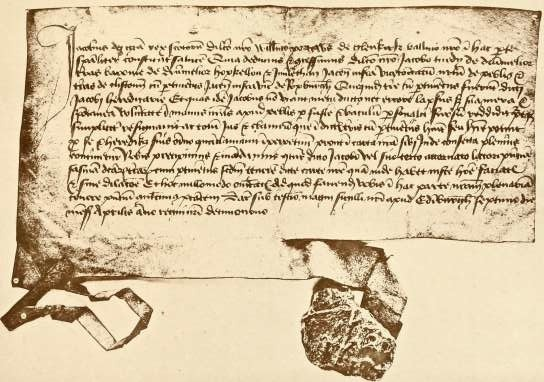
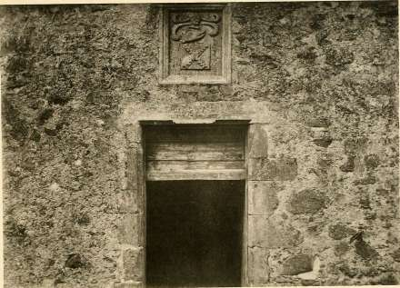
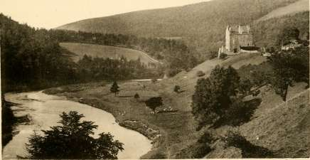
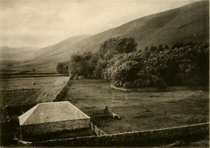
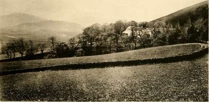
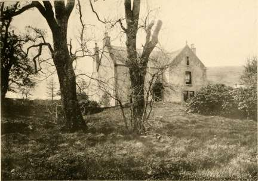
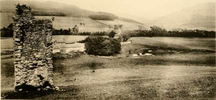

John Lindsay in 1581 gave caution in 2,000 merkes that he would not harm one Janet Tweedie, a widow.
William Dickyson of Fowledye and James Dickyson of Wynkstoun, possibly some relations of the John Dickyson whose murder has already been mentioned, sold to Adam Tweedie of Drava, and Jean his wife, P-95. certain lands, of which transaction one Walter Tweedie, a minister at Broughton, was a witness.
Sir John Tweedie, the Chaplain of the Chapel of the Blessed Virgin Mary in Peebles, is referred to as consenting to a charter granted by the King in favour of John Bullo, the Chaplain of the Altar of St. Martin, in the parish Church of St. Andrews of Peebles.
On December 26th, 1581, William Tweedie was concerned as the Procurator for one George Grenilaw, who had been cited before the Privy Council in 1581.
On the 2nd July, 1582, James Tweedie, son and heir of the late William Tweedie of Drummelzier, is granted a dispensation by King James VI. (the original of-which yet remains amongst the Writs and Charters of the Tweedie family) to enter into possession of his heritage notwithstanding his jfamils-minority. This document bears the signatures of the King, Gowry, and Blantyre, and is dated from Holyrood House.
Amongst the Scottish "complaints" in the Calendar of Border Papers there is one lodged in regard to "the taking of young James Stuart, the Laird of Fruid (a Tweedie), William Tweedie of Wrae, and other gentlemen Calendar of of Tweeddale by an ambush of the Grahams laid for them twenty-three miles within Scotland." This complaint is dated 5th July, 1584, and no doubt has reference to the unsettled state of the Borders and the constant warfare which was carried on between those dwelling on either side of the boundary between England and Scotland. The prisoners appear to have obtained their freedom, however, almost immediately.
John Creichton of Quarter, John Tweedie in Drava, John Tweedie in Stanhope, Hob Tweedie in Howgait, James Tweedie in Drummelzier, James Tweedie of Fruid, Adam Tweedie in Drava, James Tweedie younger there, John Tweedie in Henderlethane, and Alexander Portous of Glenkirk, were required, under a charge dated 10th November, 1584, to appear personally before the King's Majesty and the Lords of the Secret Council as being p,e98, accused of certain treasonable and capital crimes, of which they alleged they were altogether innocent. The 2nd December was assigned as the day for the hearing of the charges, of which no details are preserved, and in the meantime the alleged offenders were ordered to lodge their persons in ward within twenty-four hours in the Tolbooth of Edinburgh, all upon their own expense, an order it is highly improbable they obeyed voluntarily.
On the same page in the Register is found an entry of caution by
James Tweedie of Drummelzier for John Creichton of Quarter, John Tweedie in Stanhope, and James Tweedie in Henderlethane; and of a caution by Adam Tweedie of Drava for John Tweedie and James Tweedie, his sons, to the amount of 2,000 merkes; and a little later on, on the 16th November, 1584, there is an entry stating that William Cokburn, Burgess of Edinburgh, became surety for James Tweedie of Drummelzier, and William Sinclair of Roslin for Adam Tweedie of Drava and Alexander Portous of Glenkirk; from which it appears that James Tweedie, Adam Tweedie and Alexander Portous were for the time being actually in prison in Linlithgow.
Whether these various parties did enter their persons at the Tolbooth in Edinburgh, or left their sureties to settle as best they might, is not mentioned; and it is somewhat curious to find that the accused persons themselves were allowed to become surety for each other. From the next reference to this matter we have a limpse of its true meaning. It was a family quarrel of the Tweedies, as is apparent from the decision that Tweedie of Fruid was in danger of his life from the vindictive assaults of Tweedie of Drummelzier and his associates, and security was exacted for good behaviour, as we find on March 22nd, 1585, that William Foullartoun of Arde becomes security for James Tweedie of Drummelzier and for Andrew Haswell; that fames Tweedie of Fruid, his tenants and servants, shall be "skaythlis in their bodies gudes and geir be the saids James Tweedie and David Haswell: James Tweedie under pain of 1,000 merkes, and David Haswell under pain of 300 merkes, half to the King and half to the party grevit." And David Earl of Crawford obliged himself to relieve the said William Foullartoun of the above, and James Tweedie of Drummelzier to relieve the said Earl of the "premises."
Among the original Writs of the family under date 7th April in the 19th year of the reign (1586), is a recept by King James for infefting James Tweedie of Drummelzier in the lands and Barony thereof under the Quarter Seal.
On the 10th January, 1587, the King confirmed a Charter by William Murray of Romanno in favour of John Murray, his eldest legitimate son and heir-apparent, and Margaret Tweedie, the wife of the latter.
Disputes having arisen between the Scots of Branxholme and the Tweedies, a Privy Council was held by the King at Neidpath on the 8th November, 1587, when Walter Scott of Branxholme, for himself and his friends on the one side, and James Tweedie of Drummelzier, for himself and his friends on the other, agreed to abide by the decision of the King and his Council regarding all past actions and quarrels, criminal and civil, competent to either party against the other. Whatever settlement may have been made at this time, however, fresh disturbances arose between the

parties a few years after, in regard to cattle-lifting on a arge scale, to which we will presently refer.
From an entry in the Register of the Privy Council, Adam Tweedie of Dreva, notwithstanding his turbulent character, appears to have been Collector of the Taxation of the Shire of Peebles about this time. In the year 1588 there is an entry showing that he was ordained to pay out of the same £200 to one James Stuart. The Castle of Edinburgh seems to have been kept in repair by special taxation of the lesser landowners, for there is an entry of an Act assigning the second terms of payment of the tax of the small Barons for the repair of Edinburgh Castle noted on the Register of the Privy Council in 1588, under which it seems that His Majesty had called for a sum of £40,000 for this purpose. Among the contributories is given the name of Adam "Twdy" of Dreva (we quote the name as it appears in the original owing to the peculiar spelling, of which another instance does not appear). In a subsequent entry of an Act anent the third terms of payment of the same, Tweedie's name again appears but spelled on this occasion "Twedy."
Among the Retours of Heirs for Peeblesshire appears on the 6th March, 1588, James Tweedie as the heir of William Tweedie of Drummelzier, his father, in the lands and Barony of Drummelzier, the lands of Halmyre, and the Home Huntaris Land (the spelling of William Tweedie's surname being given as "Tweddie," which we quote on account of its unusual form); and in the next entry of the same appears the name of James Tweedie of Drummelzier as the heir of John Tweedie of Drummelzier, his grandfather, in the lands of Hopkelzo-Wester on the same date, the original of which is still to be found among the original Writs and Charters of the family.
On the 17th December, 1588, the King granted to John Tweedie, tutor of Drummelzier, in feu farm the lands of Nether Stirkfield extending to a mark land which was part of the Vicarage land of Stobo belonging to the Archbishop of Glasgow in the Barony of Broughton, paying therefor 30/-, and 2/- of augmentation.
In the Act for regulating the election of the Commissioners of the Shire for the coming Parliament we find James Tweedie of Drummelzier commissioned by the Barons for the Shire of Peebles; whilst a little later we find a registration by John Halliday, advocate, and James Tweedie of Drummelzier, for William Hamilton, subscribed at Edinburgh before Adam p Tweedie (the name being spelt "Tueday" on the Register) of Dreva and Alexander Tweedie of Mot.
Amongst the original Writs and Charters of the family under date 16th May, 1589, is to be found a seizin on breve from Chancery in favour of James Tweedie as heir to his father, the late William Tweedie, of the lands
of Drummelzier. John Hay of Smithfield, who was Sheriff Depute of Peebles at that time, appears to have given the seizin; whilst on the following day the same James Tweedie had seizin as heir to his father, the late William Tweedie of Drummelzier, in the lands of Home Huntaris Land and others, the original of which is also still in existence.
We now come to the story of the quarrel with the Nasmyths. On the 15th September, 1589, a caution was entered in £500 that William Tweedie, the eldest lawful son of John Tweedie (sometime tutor of Drummelzier) by his wife Magdalene Lawson, should be harmless to Thomas Nasmyth of Posso, Charles Geddes of Rachan being the surety; similar security being given by John Tweedie, merchant Burgess of Edinburgh, and others, on the 24th September, 1589, to the effect that Thomas Nasmyth of Posso, his tenants and servants, should be harmless from James Tweedie of Drummelzier under pain of 4,000 merkes. On the 4th October, 1589, we find John Lord Fleming giving caution in 5,000 merkes for John Tweedie, brother german of James Tweedie of Drummelzier, and in 5,000 merkes for James Tweedie of Drummelzier, that certain of the Nasmyths shall be harmless; James Tweedie of Drummelzier at the same time entered into a caution of 1,000 merkes for James Johnstone to a like effect. Again we find James Hamilton of Libberton also becoming surety for James Tweedie of Drummelzier to the extent of 5,000 merkes for the security of Michael Nasmyth and his son, and the like on the 4th June, 1590, by William Cokburn, burgess of Edinburgh, who becomes surety for John Tweedie of Drummelzier that Thomas Nasmyth of Posso should be harmless, under pain of £1,000. What had happened is not very clear, but it would seem that there had been an assault upon the house of Stirkfield belonging to the Nasmyths, which apparently had been "douncast" or destroyed, and that these sureties had been entered into in order to relieve John Tweedie from his imprisonment within the Tolbooth of Edinburgh.
In the renewal of Acts against the Jesuits and Seminary Priests for the reconstitution of the Commission for putting the Acts in force, we find the name of William Tweedie of Drummelzier noted amongst the names of the noblemen and gentlemen appointed Commissioners for the execution of the Acts thenceforward.
In the Roll of Landlords, recorded on the Register of the Privy Council for the year 1590, we find the name of William Tweedie of Wrae.
In the year 1590 arose the troubles with the Veitches of Dawick. What the origin was we do not know, and probably the feud had been of long standing, but on the 16th June in that year Patrick Veitch of Dawick went on business into Peebles, and while there was "perceived" by James Tweedie of Drummelzier, John Tweedie his brother, Adam Tweedie of
Dreva, John Tweedie, tutor of Drummelzier, Charles Tweedie, the bastard, William Tweedie of Wrae, and others of their following, all of whom appear to have entertained a deadly hatred of Veitch. They, therefore, rode out of Peebles in advance, divided themselves into two companies, one of which concealed itself at a particular place on the road behind Neidpath. Veitch quitted the town unsuspicious of his danger, and was followed at a distance by the other party, and at a given signal the whole closed upon the unfortunate man and "with swordis and pistolettes cruellie and un-mercifullie" slew him.
The complaint lodged in respect of this matter upon the Register of the Privy Council states solemnly that this deed was done without respect for the late proclamations as to the keeping of order according to His Majesty's godly and good intentions anent the reformation of abuses and disorders, nor yet with having regard to the present time of the strangers being with His Majesty, in respect whereof, proceeds the complaint of the Privy Council, not only is His Majesty touched in honour, but his authority highly condemned and occasion given to wicked persons to do the like, and a declaration follows that this slaughter, being the first that has been committed since His Majesty's home-coming, shall not remain unpunished.
The accused parties not appearing to answer the charge were denounced rebels, and by some unusually active means were shortly afterwards placed in prison in Edinburgh. The case was referred to the Circuit Court at Peebles, but before this took place it had become complicated by reprisals. On the 16th July, 1590, Sir William Cokburn of Stirling, Patrick Cokburn of Lamyngtoun, and John Cokburn of Newholme, were present at the assize, and gave security for their friends and relatives, James Tweedie of Drummelzier, and the others, who were all accused of being art and part in the slaughter of Patrick Veitch, son of William Veitch of Dawick. But on the 20th of the month two relations of the slain man, John Veitch the younger of North Synton, and Andrew Veitch, brother of the Laird of Courhope, set upon John Tweedie, tutor of Drummelzier, as he walked in the streets of Edinburgh and killed him there.
Thus were the alleged murderers punished through a relative, probably the uncle, of the man who was killed, and for some time there is a tiresome repetition of entries in the Privy Council records concerning sureties given on both sides under heavy penalties, nothing of course being done to punish the murderers on either side. Possibly the excessive laxity of justice at this crisis is due to the fact that James VI. had just arrived in Scotland with his newly married Queen of Denmark, and although scandalized by the outrages having taken place whilst distinguished strangers were in the country, was disposed to let the matter rest, and amongst other cases of consolation granted an order for the liberation of the Veitches. This
indulgence, however, met with no grateful return. The feud of the Tweedies and the Veitches was of too long standing to be easily extinguished. Alexander Lord Hume and Somerville of Plane gave caution in £20,000 for James Tweedie of Drummelzier and the other persons accused of the slaughter of Patrick Veitch, and caution was also entered in £5,000 for William Veitch of Dawick and his sons in regard to further possible attacks on the Tweedies.
At the same time, the Nasmyths' quarrel seems to have been still flourishing, for in the year 1590 caution was entered in £1,000 for John Tweedie, sometime tutor of Drummelzier, in protection of Thomas Nasmyth of Posso, and in £1,000 for William Veitch of Dawick, and Michael Nasmyth Posso, and Thomas Nasmyth of Posso, as sureties for the safety of James Tweedie of Drummelzier, Adam Tweedie of Dreva, John Tweedie, sometime tutor of Drummelzier, William Tweedie of Wrae and others. This was followed by other cautions entered for the same purpose.
In regard to this feud between the Tweedies and the Veitches, there is a legend mentioned by Scott in his historical introduction to "The Minstrelsy of the Scottish Border," where he speaks of the quarrel and tells the following tradition :—" Veitch of Dawick, a man of great strength and bravery, was on bad terms with his neighbour, Tweedie of Drummelzier. By some accident a flock of Dawick's sheep had strayed over into Drummelzier's ground at a time when Dickie of the Glen, a Liddesdale outlaw, happened to have made a raid in Tweeddale. Seeing this flock of sheep, he drove it off without ceremony. Next morning, Veitch perceiving his loss, summoned his servants and retainers, led a bloodhound upon the traces of the robber by which they were guided for many miles, till on the Liddel it stopped by a very large haystack. The pursuers were a good deal surprised at the obstinate stay of the bloodhound, till Veitch pulled down some of the hay overed a large excavation containing the robbers and their spoil. He instantly flew at Dickie and was about to stab him, when the freebooter protested that he would never have touched a hoof of them had he not taken them for Tweedies property. This dexterous appeal to Veitch saved the life of the mosstrooper."
Sometime about the year 1590 it would seem that an Act of Parliament had been passed in regard to the troubles on the Border, under which an order was issued to the Border Lairds and Heads of Families to find caution for the good conduct of their dependents. In the Register of the Privy Council we find an entry to the effect that, in conformity with this Act, certain persons had been ordered to find sureties, among whom is given the name of James Tweedie of Drummelzier. In the course of disputes which existed at this time in the family of Cockburn, the Register of Deeds in the Scottish Office refers to Dame Jean Herries, Lady Skirling, who, on 16th December, 1590, agreed to decreet arbitral and submission, by which
she resigned to her son her life rent and interest in the New Maynes of Skirling. On this occasion her son was perhaps urged on by his wife, Helen Carmichael, who afterwards married James Tweedie of Drummelzier as her second husband, and with him persecuted Lady Skirling to such an extent that she had to seek redress and protection from the Lords of the Council. More is heard of her troubles later on, for on the 25th January, 1603, she appeared personally before the Lords of Council and preferred her complaint, stating that although she was possessed of certain lands to which she referred, and had ever since the decease of her husband been in possession of them, yet Helen Carmichael, relict of William Cockburn of Skirling, with James Tweedie of Drummelzier, now her spouse, have masterfully uplifted from the tenants "the maills and fermes" for the crops of 1601 and 1602, and threatened to bereave them of their lives if they did not comply. The more "to utter his bangstrie and oppressioun," the said James Tweedie had compelled the tenants to oblige themselves on the Sheriff's Books at Haddington to pay to him the profit of these lands, so that being subjected to double payments, they were constrained to leave the lands waste; and further that, about Martinmas last, the said James Tweedie and his servants reft from the complainer's tenants two oxen belonging to her. "She is ane ageit gentilwoman, destitute of her husband and freindis quha ar dwelling far frome hir, hence this oppressioun." This James Tweedie of Drummelzier was, in the end, the ruin of his family. He regarded no law, human or divine, was guilty of the most atrocious crimes, and surpassed, Chambers' HMst. perhaps, the wildest and most savage of his redoubtable ancestors, the formidable Lords of Thanes Castle.
Having digressed somewhat in order to refer to this particular trouble of the Lady Skirling, we will return and again take up the events in the order of date as they happen.
The troubles in Peebles still seem to have continued, for in 1591 we find a complaint by John Hay and Adam Matthisoun recorded on the P ' Register of the Privy Council, to the effect that while they were "gangand upon the Hie Street" of Peebles in a peaceable and quiet manner, James Tweedie, the half-brother of one Stevin Lyne, with about twelve persons or more, all armed, set upon Hay and Matthisoun. James Tweedie and the others mentioned in this charge do not seem to have appeared, and the order was made on the 29th April to denounce them rebels.
The troubles with the Nasmyths were to the fore, as we find a complaint by Thomas Nasmyth in regard to injuries sustained by him at the hands of James Tweedie of Drummelzier and his friends. He does not appear to have obtained any redress further than that of the registration of a bond of caution in £100 by James Tweedie of Drummelzier and Sir Steven Alexander, which follows on the records; and another in 1,000
merkes by James Tweedie of Drummelzier alone; while within a few days afterwards William Hume and James Tweedie of Drummelzier, for failing to appear to answer the charges lodged against them for the disturbance of the quietness, peace and justice of the country, are denounced rebels, Adam Tweedie of Dreva and James, his eldest son, giving sureties.
About this time an incident is recorded of the Murrays of Romanno, in which we find the name of Margaret Tweedie as the spouse of John Murray, the younger, of Romanno. This was in connection with the murder of John Hamilton of Coitquoitt, a place afterwards known as Coldcoat, and now named Macbie Hill. At this period Romanno was in possession of the Murrays, who had obtained the estate by marriage with an heiress, Janat Romanno of that ilk. In 1591 there were three ladies connected with Romanno, respectively the wives of the father, the son, and the grandson. For their accommodation there were two dwellings: the old fortalice and what was called ihe Temple House, a name probably derived from the lands which at one time belonged to the Knights Templar. These ladies came to trouble on account of their husbands being charged with the slaughter of their neighbour Hamilton, the alleged murderers having absconded and taken refuge with friends and abettors, and they were denounced as rebels, and four "men of Weir" were quartered on the ladies by the authorities at Romanno and directed to be maintained and paid a monthly sum as well.
The three Murrays, Helen Henderson, Margaret Tweedie, and Agnes complained to the Government about this oppressive measure. They were at first unsuccessful in getting relief, but in March, 1592, they were at last exempted from the maintenance of these men on giving security that their husbands should not find refuge within Romanno House. Like dutiful subjects they of course gave the required security, but like dutiful wives they also found that the authority of their husbands was more pleasing to obey than the Royal mandate, and so the Murrays soon afterwards returned to their own homes and nothing further was heard of the affair. There were some subsequent proceedings, such as entering into securities that there should be no mutual molestation, but so feeble was justice and so weak the Royal authority that the scandal of Hamilton's murder blew over, and, as we have already said, the Murrays resumed their residence at Romanno as if nothing had happened.
Something, however, appears to have happened very shortly after- wards, for in 1592 there is an entry upon the Register of the Privy Council of a caution by various persons that they will not harm Margaret Tweedie, the relict of John Murray of Romanno. From this it would seem that someone must have taken justice into his own hands
and put an end to John Murray of Romanno for ever; while a little later a complaint is lodged by Jonas Hamilton of Coitquoit, William Hamilton, his brother, and William Brown in Bordland, in regard to letters obtained by Margaret Tweedie, the relict of John Murray of Romanno, charging them to deliver up the place of Romanno, of which it seems they were holding possession.
On the 1st August in the same year, there is an entry which shows that James Tweedie of Drummelzier had taken up his kinswoman's quarrel in regard to her claim to have the fortalice of Romanno and the house called Temple House delivered up; and later still in the record, is an entry from which it would seem that Margaret Tweedie had become the nominal purchaser of the properties, and claimed as such to have them handed back to her. This appears to be the end of the troubles which arose from the slaughter of John Hamilton.
We now return to the year 1591. Chambers, in his "History of Peeblesshire," makes the somewhat dry remark that "strangely enough the Tweedies were either not concerned in Bothwell's treason or had the address, by aiding the King in his emergency, to escape the visitation with which many of their neighbours were afflicted." In 1592, they actually appear in the new quality of complainers instead of being complained against. They had been injured in one of the raids of the Clan of Scott, which shows us what a wide sweep of country was exposed to such depredations. The Register states the nature of their complaint to be that, although Sir John Edmestoun of that Ilk had become surety some short time previous for Walter Scott of Branxholme, and he had been bound over to keep the peace, yet on the 15th December, 1592, Scott, with about two hundred followers attacked the Tweedies unexpectedly and harried the lands of Drummelzier and Dreva, from which were driven off 4,000 sheep, 200 oxen and cows, 40 horses and mares, and moveable goods to the value of £2,000, all belonging to James Tweedie of Drummelzier and Adam Tweedie of Dreva and their tenants. Sir John Edmestoun was warned to appear before the King and Council and answer for the "spuilzie" thus committed upon James Tweedie of Drummelzier and Adam Tweedie of Dreva, and he was ordered as well to pay to James Tweedie and Adam Tweedie the full amount of the damage they had sustained.
A James Tweedie is referred to in the Register of the Great Seal, under date the 20th May, 1591, in regard to a charter confirmed at Holyrood House by the King to George Trowis of Birsto, to which this James Tweedie was witness; and about the same time, on the 21st December, in another Charter, John Tweedie and Katherine Stuart, his wife, are also referred to.
On the records of the Privy Council there is a registration under date the year 1592 by John Crawmouth, as Procurator for sureties, of a caution by James Tweedie of Drummelzier for Adam Tweedie of Dreva, James Tweedie, his son and apparent heir, and William Tweedie of Wrae, in £1,000 each, and for "Mr." John Tweedie and Thomas Tweedie, sons of the said James Tweedie, Thomas Tweedie of Innerleithen, Thomas Tweedie in Peebles, and John Tweedie, his son, in 500 merkes each; and of a caution in 2,000 merkes by Adam Tweedie of Dreva for James Tweedie of Drummelzier; the bond being subscribed before one John Tweedie, a Notary Public. It is amusing to find James Tweedie of Drummelzier appearing as the cautioner for Adam Tweedie of Dreva, and Adam Tweedie of Dreva as the cautioner for James Tweedie of Drummelzier.
Another complaint follows by David Cochran of Pitfour, asking that John Tweedie, the present keeper of a certain house, should be ordered to deliver it up, and for directions to be issued to the officers of arms to see that this should be carried out. A little later in the Register appears an entry of caution by Harry Lindsey, for himself, John Tweedie, and nine servants not to harm Peter Cochran.
At the close of 1592, however, the feud with the Geddes family blazes up again. It is perhaps best to give the story as it appears on the records in the quaint language of the times. The complaint runs as follows :—
"Complaint by Marie Vetche relict and Charles Geddes of Rachane, brother, with the bairns, other brothers, and kin and friends of the late James Geddes of Glenheyden. It is not unknown how many shamefull and unworthy murthouris and slauchtaris have been committed on their kin by James Twedy of Drummelyair and his friends who hes evir sicht and seikis thair utter wrak and extermination in spite of any assurances passed between them they evir takand thair advantage of the saidis complenairs at sic tymes quhenas thair is na thing lest then ony evill luiked for at thair handis as is manifest in the hail bipast slauchtaris quhilkis they have committit opoun the said Complenairs friendis and in the lait shamefull and barbarous murthour of the said umquhill James quha being with the burgh of Edinburgh the space of aucht days togidder hanting and repairing to and fra oppinlie and publicklie within the said burgh he mett almaisit daylie with the said Laird (of Drummelzier) upoun the hie street and the said Laird feiring to sett upon him knawing that he wuld gitt na advantage by ane oppin persute albeit the said umquhill James was evir single and allane he had espyis and moyinaris lying at await for him ... upoun the XXIX day of December last ... the said Laird being advertisit be his espyis and moyenaris immediatelie dividit his haill friends and servants in twa Companyis and directit Johnne and Robert Twedyis his brethir germane [quha wer laitlie pardonit be his Majestie for the slauchter
of the Laird of Dawyk's sonne], Patrik Porteous of Holkshaw, Johnne Creichtonn of Quarter, Charlis Twedy household servant to the said James and Hob Jardane to conis clois being direct opposit to the said Davis Lindsay's buith and he himself accumpanyed with Mr. Johnne and Adam Twedyis sonis to the gudeman of Dreva past to the Kirkwynd they rushit oute of the saidis cloissis and shamefullie cruellie and unhonestlie with schoitis of pistolletis murdered and slew him behind his bak .... not appearing ... the order is to denounce the defaulters rebels."
It would appear that this murder of James Geddes by the Tweedies of Drummelzier was in fact by way of revenge for the attacks made upon them by the Veitches, James Geddes, who was brother-in-law to a gentleman of that family, having, no doubt, been concerned in the reprisals made upon the Tweedies of Drummelzier.
A bond of caution was entered upon the Register by Thomas Willson on behalf of Charles Geddes of Rachan and his brother George Geddes, that they should not harm "James Tweedie of Drummelzier, William Tweedie his half-brother, Gawin Williame and Walter Tweedies his half-brothers, Williame Tweedie of Wra, Williame Adam and James Tweedies his sons, Adame Tweedie of Drava, James, Mr. Johnne, Adame, Thomas and Williame Tweedies his sons; Alexander Tweedie of the Mott; James and Thomas Tweedies his brothers; Johnne Tweedie of Innerleithane, James Tweedie his brother, Johnne Tweedie of Frude, Adame Tweedie of Kingilduris, Walter, Williame, Thomas and Johnne Tweedies his brothers; Patrik Tweedie of Cloch, Johnne and Walter Tweedies, burgessis of Edinburgh; Johnne Tweedie in Howgait, Johnne Tweedie of Southwode, Thomas Tweedie in Peblis, Johnne and James Tweedies his sons, James Tweedie, burgess of Peblis; James and Williame Tweedies, brothers in Stobo; James Tweedie, their brother's son." This bond was subscribed at Boghall on the 14th February, 1593. SJD.1593.
On the Register of the Great Seal we find, under date the 20th January, 1593, the name of John Tweedie of Southwode and his heirs mentioned, and on the 5th May, in the same year, is found a caution by James Tweedie of Drummelzier for James Johnstone. From this it would appear that James Tweedie of Drummelzier was at large again, and had probably disposed in some way or another of the charges which had been brought against him by the Veitches and the Geddes family. Some clue to this is found in the Calendar of Border Papers, in which, under date of the 10th June, 1593, is given a long letter from Thomas Lord Scroop, a warden of the West March, to Burleigh, the English statesman, referring, amongst other things, to a correspondence which Scroop had had with Lord Maxwell in regard to the escape of the Laird of Drummelzier, who had broken prison and fled with James Johnstone. It is a matter of regret
that this actual correspondence is not forthcoming. It would seem that Tweedie was at large and that he and Johnstone were adopting the old tactics of becoming sureties each for the other in order to satisfy the requirements of the authorities. This James Johnstone had apparently been concerned with the Tweedies in their feuds with the Geddes family and the Veitches, as a caution is added by Charles Geddes in £10,000 on behalf of the Geddes of Rachan, that another of the surname of Geddes should not trouble James Johnstone of that Ilk, James Tweedie of Drummelzier, or their tenants or servants.
That Tweedie had been in prison quite recently is evident in that a caution had been entered in 10,000 merkes by Sir Michael Balfour of Burley that, on being liberated from Edinburgh Castle, Tweedie should within forty-eight hours enter himself in ward in Fife, and there to remain during His Majesty's pleasure. On the day following the usual counter caution appears in the registration of surety for James Tweedie of Drummelzier that he shall not harm any of the surname of Geddes; Walter Tweedie, the brother of the Laird of Drummelzier, being amongst the witnesses. Another surety is shortly afterwards lodged on behalf of Thomas Geddes not to harm the Tweedies, who are all (thirty-nine in number) again referred to by name at length as mentioned in the original complaint in respect of the murder of James Geddes.
In 1593 also, James Tweedie of Drummelzier had registered a bond of caution on behalf of John Crichtoun and Patrick Porteous on the complaint of Margaret Veitch, relict; Charles Geddes of Rachan, brother, with the bairns and other brothers, kin and friends of the late James Geddes, in respect of the "shamefull and cruel slauchter of the said James Geddes." This bond was subscribed at Drummelzier on the 30th December, William Tweedie of Wrae and Walter Tweedie, brother of the said James Tweedie, being witnesses.
A little later, on the 14th February, 1594, the Geddes family showed to the Lords of Council that John Crichtoun and Patrick Porteous had not appeared, and the Lords denounced them rebels and ordered them to be put to the horn, and also that James Tweedie of Drummelzier, the cautioner for their appearance, should be prosecuted for the penalty.
The Tweedies appear to have retaliated on the Geddes by com- pelling them to give surety: Charles Geddes of Rachan becomes cautioner for George Geddes, his brother, and for certain of his friends, upon it being required by James Tweedie of Drummelzier. Walter Scott also becomes surety for John Veitch that he shall not harm James Tweedie of Drummelzier, Adam Tweedie of Dreva, John Tweedie "sometime" tutor of Drummelzier, and William Tweedie of the Wrae.
Notwithstanding what Chambers in his "History of Peeblesshire" has
remarked, it is curious to find that on the 30th September, 1594, Sir William Cockburn of Skirling, and Patrick Cockburn, tutor of Lamyngton, became sureties for James Tweedie and John Tweedie, tutor of Drummelzier, who were accused of having given countenance to the "unnatural and odious rebellioune of Francis, sumtime Erie of Bothwill, manifested to the haill world in his manifest contempt of ouer Soveraine Lordis authorite." At this time men of inferior position had short trial and were Cocfcburns of tbat hanged without mercy "for enterteyning of the said Francis." Others, like my Lord Home, who made repentance in the New Kirk "befoir the assemblie on hys knees," had to find two securities for their future conduct.
Trouble was still going on in the Town of Peebles, as John Stoddart and Thomas Tweedie, a burgess of Edinburgh, were called upon to give surety in the year 1594 in £500 not to harm the inhabitants of that Burgh.
The King now appears to have come to the conclusion that some strong measures were necessary in regard to the troubles on the Border ; and the Register of the Privy Council gives the decision His Majesty arrived at, as follows:— "His Majesty now thinking uponn his awne estate and the estate of the Commonwelth altogidder disordourit and shaikin louse be resonn of the deidlie feidis and contraversis standing aurangis his Hienes subjects of all degrees" ... accordingly order is given "to charge the persons underwritten among; whom there is at present deadly feud to appear under pain of rebellion each accumpained with no more of his special friends than is hereinafter regulated before the King and Council at Haliruidhous upon the days specified." ... Amongst the persons cited we find James Tweedie of Drummelzier, who was called upon to appear with a retinue of not more than 24 persons upon 10th March, 1596. What came of this we do not know, except that shortly afterwards there follows an entry of a caution given in £10,000 by James Tweedie of Drummelzier, subscribed before Adam Tweedie and James Tweedie, servitor to the Laird of Drummelzier.
There is on record a contract of marriage, dated the 5th August, 1596, entered into between George Haddon of that Ilk and Nicole Tweedie, lawful daughter of the late Adam Tweedie of Dreva, which was confirmed by a Charter of James VI. on the 27th August, 1606, and also by another IRobertson's Charter of the 19th February, 1618, whereby George Haddon gave to his wife a life interest in certain lands in the Barony of Broughton, to which the witnesses were Mr. Archibald Douglas, Archdeacon of Glasgow, and William Tweedie of Wrae.
Although William Cockburn of Henderland, a burgess of Edinburgh City, had been security in 1584 for James Tweedie of Drummelzier and Adam Tweedie of Drava, he declined with his father in 1596 to again find
law burrows for James Tweedie, from which we are tempted to think that Gochburns of tbat perhaps on the first occasion the Tweedies may have left their sureties to settle as best they might with the authorities.
From an entry in the Register of the Privy Council it seems that on 1st December, 1596, John Tweedie, of what place is not mentioned, was put to the horn along with others, that is outlawed, at the instance of the bairns of the late James Stewart, who must have been wronged in some way, if not actually killed by them; in the same entry proclamation is ordered discharging all the lieges of "all resetting" these persons during the time of their rebellion, and John Tweedie was called before the Council of the Buro-h of Edinburgh at the same time. Later on James Tweedie of Drummelzier is recorded as being put under terms not to harm James Hamilton, whilst James Tweedie himself went surety at the same time for Sir James Johnnestown to the amount of £10,000.
The troubles with the Veitches still broke out at times. On the Register of the Privy Council Patrick Tweedie in the Lyn (i.e. Lyne), and Robert Tweedie of "Olipheir" Castle were bound over in 1597 in £500 not to harm William Veitch of Kingsyde, whilst Alexander Cockburn became surety in 1,000 merks for William Veitch and in £500 each for James Veitch, Andrew Veitch and Alexander Veitch not to harm Patrick Tweedie. About the same time it seems that Sir Patrick Murray is registered of a Bond of Caution in £20,000 by James Tweedie, apparent of Drava, but on what account is not mentioned. Next year John Tweedie of Winkston becomes surety for James Hamilton, and James Tweedie of Drummelzier again becomes surety for Sir James Johnnestown. William Tweedie of Wrae also went surety for Archibald Douglas, the Archdeacon of Glasgow, in £2,000, that he (the Archdeacon) should not harm John Govan of Cardrona and Robert Scott in Esshesheilles, a most extraordinary affair surely, but what the Archdeacon had been doing or how Tweedie of the Wrae came to befriend a member of the Church is not explained.
On the 18th April, 1599, the King granted to John Lord Vester a charter of certain lands then lately occupied by Thomas Tweedie in the Parish of Peebles.
William Cockburn of Henderland was summoned on the 9th June, 1599, with his lather and his sisters husband, James Scott, for not finding burrows for James Tweedie of Drummelzier.
There is no doubt but that on the Borders even the appointed officers of the Crown hesitated to carry out their duties to the full extent either in consequence of their near relationship with the offenders or the determined front shown by the evil doers, or possibly even because they sympathised with the system of rough and ready justice from which sprang the terrible blood feuds which were the chief cause of disturbance. An instance of this
is shown in the following proclamation, dated 19th July, 1599, recorded on the Register of the Privy Council:— "By divers laws and Acts of Parliament, Sheriffs, stewards and their judges are required to know and understand the laws of this realme and to execute the same without delay... Yet the following Sheriffs have been altogidder cairles and unmindful of the deutifull discharge of thair Officeis, to wit
- James Douglas.
- Sir George Home.
- Patrick Murray.
- James Lord Hay of Yester, Sheriff of Pebles.
"This Sheriff has not attempted to apprehend the rebels underwritten registered in the Sheriff Court Books of the said Shire. James Tuedy of Drummelyeare denounced upon 3rd August, 1598, at the instance of Walter, Prior of Blantyre, for not paying him certain sums as one of the cautioners for the Laird of Johnnestoun, William Cockburn younger of Henderland, and Simone Scott ... for not finding law burrows to William Vetche ... and David Scott son natural of Walter Scott of Gouldillandis ... for not finding law burrows to Janet Tuedy of Drummelyeare."
This proclamation is followed up by another on the 19th July, 1599, calling on various landlords to find caution that they and those they are obliged to answer for, shall observe the King's peace and redress parties "skaithed" under certain specified penalties, among whom is found mentioned, Tweedie of Fruid in 2,000 merks for himself and for Simon Scott his tenant in Fruid in the same sum.
An entry on the register dated the 9th August, 1599, throws, perhaps, some light on this matter in which the Archdeacon of Glasgow was concerned. Uthreid McDowell of Mondurk became surety on that date for the Provost and baillies of the town of Peebles, and for Archibald Douglas, the parson there, perhaps the same person formerly referred to as the Archdeacon of Glasgow, and for (amongst others) Thomas Tweedie, James Tweedie, Allan Tweedie, Edward Tweedie and John Tweedie, all burgesses of Peebles, not to harm William Horsbrough in Edderstown.
On 8th September, 1599, James Tweedie of Drummelzier received a charter from the King of certain lands, the list of which is given, and in the same year, 1599, under the heading "miscellaneous" in the Privy Council papers, is found an entry of a weedie as a itness with the unusual Christian name of Mungro, with which the records of the sixteenth century come to an end so far as the Tweedies are concerned.
CHAPTER IV.
A.D. 1600.
Matters did not seem to mend in the least with the advent of the seventeenth century, and among the earliest records for the year 1600 in the Register of the Privy Council is an entry of a caution by Thomas Porteous of Glenkirk for "John Tweedie of Winkston and Elizabeth Hamilton Lady Stenhous his spouse in .£1,000 not to harm certain tenants and indwellers in the upwode of Baith."
The disturbed and lawless condition of the Tweeddale district at this time is shown by the appeal of King James VI. to the more prominent of the Barons of the Borders to appear at a meeting of the Council at Falkland and give their advice for the quieting of their districts. The Borderers' indifference to the Royal desire is evidenced by the fact, recorded in the Register, that these Barons had not appeared, although summoned by the King, and that in consequence the King had postponed all further deliberation in the matter (28th July, 1600). Among those whom the King had honoured by his command we find James Tweedie of Drummelzier and Tweedie of Dreva, and Chambers remarks that nothing perhaps conveys so impressive an idea of the Sovereign's abject position at this period as the circumstance of his inviting the Tweedies, those arch disturbers of the peace, to assist him, by their counsel, in putting a stop to the disturbances. It looks like the old story of the poacher taken on as gamekeeper, and it is not perhaps surprising to find immediately afterwards the feud between the Tweedies and the Veitches still going on. Something had happened of sufficient importance to cause the King to issue an order charging James Tweedie of Drummelzier and William Veitch of Dawick to appear before the Council on a ertain day, prepared to submit their feud to "neutral persons" under pain of being declared rebels and later on in the same year James Tweedie, apparent of Dreva, is registered for a aution bond in 300 merks, while Robert Tweedie of Blackcastle appears on the record as a urety for James Somerville of Murehall in £500.
On the 4th November, 1600, the King granted to William Tweedie the younger of Wrae, and Mary Baillie his spouse, the lands of Whitslaid, Glenkirk, and Wrae, resigned by William Tweedie the elder of Wrae and Marjory (or Marion) his spouse.
Amongst the wills proved in the Prerogative Court of Canterbury is found that of Anthony Twedye of Stebunneth, Middlesex, in the year 1600.
"Symound" Tweedie of Lyntoun stands as surety in the following year for Robert Graham and Adam Dovis in 400 merks, while the only other mention of the name, on the records for that year, is where one William Tweedie, a serving-man of Henry Bickartoun, attested a charter at Holyrood House on the 29th December.
Next year, however, the arm of the law seems to have taken courage, or rather to have succeeded in enlisting on its side some of the better disposed of the Borderers. On the 23rd October, 1602, a General Bond is registered as formed of "Noblemen Barons landit Gentlemen and utheris against thieves murderers and oppressors deiplie considering with the wrackful and intolerable calamities so lang sustenit be us," among the subscribers to which appear James Tweedie of Dreva and William Tweedie of Wrae.
On the 12th November, 1602, King James granted a charter conveying in feu farm to William Tweedie of Wrae the church lands of Glenquhome with the pasturage of 30 "soums of bestial" in the common of Glenquhome. The lands are stated to have belonged for some time to the parson of the parish Church of Glenquhome and to have been possessed by William Tweedie of Wrae and his predecessors as "native tenants and feu farmers beyond the memory of man."
Next year something happened, the only trace of which exists in an entry in the rnvy Council Register 01 the names ol George Hamilton Reston and John Tweedie of Winkistoun, concerning someone (unnamed) and the "demolishing of his house." What it all was and how the house had come to be demolished we know not, but it would not be difficult to form a guess.
Violet Tweedie was the wife of Henry Bickartoun, as appears from an entry in the Great Seal Register dated 4th April, 1603, and again in 1606.
About the same time James Tweedie of Drummelzier and his friend Alexander the Lord Spynie had some quarrel with William Kemp, a merchant burgess of Edinburgh, for there are entries of bonds by both of them not to harm William Kemp, who, it may be presumed, had some good cause to call for this protection.
In 1604, Tweedie of Dreva had some grievance against Lord Maxwell "for exhibiting Armstrong before the Council." Who this Armstrong was is not very clear, but it is interesting to note that the estates of the famous Johnnie Armstrong of Gilnockie, after his seizure and summary execution by James V. in 1530, had been made over to Lord Maxwell, and that
Christie Armstrong, Johnnie's son, in 1557 got back the lands, and further, in 1562, was intrusted with the office of collector of the revenues of the Maxwell lands in Eskdale.
Trouble was going on in many quarters at the same time; John and James Tweedie, the sons of Tweedie of Dreva, are bound over not to harm William Linlythgow; and James Tweedie of Drummelzier not to harm William Hay of Linplum; George Tweedie of Calder in company with James Bailye is in trouble for attacking and wounding John Lowrie, and they are apprehended by the King's guard and lodged in the Tolbooth of Edinburgh; Oliver Kay and James Tweedie burgess of Peebles, have a difference with James Lowrie about "a complete stand of footmen's arms"; the feud between Lady Skirling, relict of Sir James Cockburn, and James Tweedie of Drummelzier still flourishes and Tweedie is again bound over not to harm her; Adam Tweedie, son of Adam Tweedie of Dreva, and William Veitch of Kingsyde give a bond by John Tweedie of Winkistoun not to harm James Brown in Wester Hoprew, the bond being written by and subscribed before John Tweedie, notary in Peebles; James Tweedie, apparent of Dreva, becomes surety for John Tweedie of Innerleithen, and for his son Adam, not to harm James Stewart of Schillinglaw, the bond being witnessed by William and Walter Tweedie, the sons of James Tweedie of Dreva; while Burke tells us that William Tweedie of Oliver, the son of a former William Tweedie of Oliver, had his cows, oxen, and horses stolen by John Batesoun, alias Jock of the Scoir, and was killed by him, Batesoun being afterwards hanged at Edinburgh for the crime.
The next year shows but little difference. The registers open with a record of two harmless dealings with certain lands, from which it appears that a Margaret Tweedie was wife of Archibald Douglas, and Mariote Tweedie was a daughter of the then late John Tweedie, tutor of Drummelzier, but thereafter there is no reference but to quarrels : John Tweedie has difficulties with James Lithgow; John Tweedie, as tutor to John Tweedie his brother's son, claims from one Daniel Wilkie the custody of "Thomas Henderson, his young kinsman on the mother's syde"; Patrick Tweedie claims John Tweedie from David Wilkie; Uchiltorie McDowell finds surety for John Cochrane to James Tweedie; Hew Scott charges James Tweedie with rebellion; John Tweedie of Winkistoun compels Oliver Kay to go bond for James Linlythgow that he will not harm him; and Oliver Kay is also called upon to guarantee that Robert Scott shall not harm Isobel Hamilton, Lady Stanehous, John Tweedie of Winkistoun her spouse, William Tweedie son of Tweedie of Dreva, William, Adam, and Charles his sons, or James Tweedie of Denis; Uthreid McDowell (possibly the same as Uchiltorie before-mentioned) has, in his turn, to get a surety not to harm James Tweedie in Culmoir or ravage his lands; James Tweedie of Drummelzier is bondsman
for Sir John Murray and Sir Archibald Murray, not to harm Andrew and James Veitch, and again for "Mr." Archibald Douglas, parson of Peebles, not to harm Alexander Horsburgh of that Ilk.
Notwithstanding all this James Tweedie ol Drummelzier is summoned by the authorities as a aron to the Council, on the 7th June, 1605, and sits in Parliament as member for Peeblesshire for that year and again in 1608.
William Twyddie (as the name was written), of the Essex branch, is mentioned in Morant's History of Essex as having married Beatrix Winnington; he died 21st June, 1605. He held the Manor of Maldon alias Earles Maldon, and was succeeded by his son Richard Twyddie, who was then forty years old. There had also been another Richard Twedy (described as of Boreham, Stocke, Oldehall in Essex, and Stamerden in Northumberland), the father of William, who by his will, dated 22nd January, 1574, gave large benefactions to the parish of Stock in Essex and died on 28th January, 1574, and it is recorded that his great-grandfather was "George Twedye who came out of Scotland from the house called Drummelzier." What caused George to emigrate is not known, but it was a ery unusual thing in those days. The will of another member of this branch, Robert Twedye, is also registered; he was apparently of Runsell in the parish of Dunburye. Another Tweedy also resided at Hilmer, Bucks, in 1599, and was assessed for beans and mutton for the Queen's household on her progress.
A gift is recorded, on 26th November, 1605, to James Tweedie of Dreva, of the lands of Bodisbek and others, fallen by decease of John Ewart of Bodisbek, the grandfather of Neil Ewart, now of Bodisbek.
On the 14th February, 1606, the King confirmed to Marion Tweedie, daughter of John Tweedie, tutor of Drummelzier, certain lands in Brochtounschelis, Nether Stirkfield, Hopkcailzie, and Drummelzier. This Marion appears to have married Mr. James Law, a writer in Edinburgh, as we shall presently see, sometime previously to 1631.
In the same year a warrant was issued at the request of the Laird of Calderwood for the arrest of one George Tweedie, named without any identifying description, upon suspicion of the hoching of James Maxwell's horses and burning his houses and corn."
In August, 1606, a great onslaught had been made by George, Earl of Dunbar, under the King's orders, upon the Borderers, when he hanged no less than 140 of them as outlaws. It is somewhat curious, after what the records disclose, to find on the Register of the Privy Council, under date of 23rd November, 1606, an entry of a charge issued by the King calling on certain landlords of the Borders, amongst them James Tweedie of Drummelzier, to appear before the Lords of Council, as one of the barons known "to be weill disposit to the peace and quietnes of the estaite" to give their advice as to reducing of the Border to quietness and obedience.
A William Tweedie appears on the register of the Privy Council as a witness to a Bond subscribed at Edinburgh in connection with the affairs of Sir James Bannatyne, and Alexander Tweedie of Moit appears on the same record as surety for James Somerville.
Thomas Tweedie, "son to the guidman of Dreva," is mentioned as one of the witnesses to a certain proclamation made at the Market Crosses of Kinross and Cupar on the 4th and 5th September, 1606, by the King's messenger charging the Earl and the Master of Morton under certain letters for a purpose not mentioned.
In January, 1607, there is an account of proceedings taken by the King's Advocate in regard to a Bond entered into on 1st August, 1597, by William Earl of Angus and James Tweedie of Drummelzier, engaging that the Earl should neither directly nor indirectly "have intelligence with any foreyneris or strangeris nor traffic with Jesuits." This Bond was now alleged to have been lnlrmged and action taken upon it accordingly for recovery of the caution money of £20,000 against the Earl and against James Tweedie of Dreva, the endorsement being "King's Advocate against the Earl of Angus for having resetted an excommunicated Papist decree."
James Tweedie of Drummelzier also seems at the same time to have been in difficulties in company with Sir James Johnston and John Johnston, baillie of the water of Leith, under another bond of caution given by him in their support, and before the year was six months older he was to be in more serious trouble still, as will be seen from the next incident.
The murder of Alexander, Lord Spynie, the friend of James Tweedie of Drummelzier, who also suffered severely in the fray, affords a curious picture of the dangerous state of everyday life even in the capital itself, and the whole is brought before our eyes almost as if we had been actually present. "Upon the 5th inst." (June, 1607), runs the complaint, "while Alexander Lord Spynie was gangand in peciable and quiet maner upon the Hie Street of owre Burgh of Edinburgh recreating himself after his supper, David Lindsay, apparent of Edgell, his own sister's son, accompanied by Andro Stratoun, son to the Laird of Lowrestoun," and others "all bodin in feir and weir," armed with "secreteis plaitslevis gantillatis swordis hagbuts pistolets and utheris weapons invasive," came to the said Lord Spynie "about ten howris at evin, and or evir he wes wer of thame, or saw thame and afor they utterit any speitcheis unto him, they schote and dischargeit thrie pistolettis at him, quhairwith James Tweedie of Drummelzier, quha was gangand with oure said cousin (Lord Spynie) for the tyme, was schote alangis his ribbis and throwe the armis," but Lord Spynie "having by the providence of God" escaped the shot, they all then drew their swords and set upon him, wounded him in the head and left him lying for dead. And dead
he was, for in the bonds of caution registered by both sides for some time after, "the slaughter" and the "widow" of Lord Spynie are referred to, while his son is called the "now" Lord Spynie; James Tweedie, however, evidently recovered from his wounds and he and the other Tweedies seem to have been nowise behind in this quarrel whatever it was; his son James the tutor of Drummelzier, his brothers John, Adam and Robert; James Tweedie of Dreva and his brothers John and William; Tweedie of Howgait, and Walter his brother; James Tweedie the brother of the Laird of Fruid; James Tweedie of Culmoir, and all their friends and servants being concerned in the reprisals upon the Lindsays, Horsbroughs, McDowalls and others that had been of the party which attacked Lord Spynie and James Tweedie of Drummelzier on the eventful 5th June, 1607.
It is noticeable, as illustrating the spirit of the times, that it was thought necessary to mention in the complaint that the attack on Lord Spynie was made by the assailants without having " utterit any speitcheis unto him," and before he was aware, rather as if to anticipate a suggestion that Lord Spynie had been given fair warning and had no one but himself to thank for being killed under the circumstances.
Adam Scot, the son and heir of Robert Scot of Aikwood and Helen Tweedie, died in 1607. He was also designated as of Wamphray.
Amongst the original Charters is a seizin on Charter by James Lord Hay of Yester to James Tweedie of Drummelzier of the lands of Fruid, barters, lying in the Barony of Oliver Castle, dated 20th May, 1608.
James Tweedie of Drava was on the 23rd June following served heir SceblcafitH e to his father Adam Tweedie of Drava in the lands of Winkestoun. 1Wo. 39.
Gilbert Tweedie, identified as of the Chapel of the Blessed Virgin Mary at the western end of Peebles, granted, probably in his character as the incumbent of that Chapel, certain lands to Alexander Horsburgh, a Charter which was confirmed by the King on the 14th February, 1609, and on the following day another Charter of the like was confirmed to Alexander Tait and Mariote Horsburgh. These Charters are referred to as having been originally made on the 17th July, 1596, in the Castle of Neidpath at Peebles.
John Tweedie, a serving man of James Kynneir, is a itness to a Charter dated 6th July of this year confirmed by the King at Edinburgh. p , 41,
Now follows another entry of one of those "complaints" which are made in such a matter of fact way as shows that the affair referred to was little more than an everyday occurrence. We give the quotation in extenso.
"Complaint by Sir Thomas Hammiltoun ... as follows:— ... Robert Tweedie in Nether Southwood ... with others to the number of four score all armed with hagbuts and pistolets and other weapons came
on the 9th June last to the Kirktoun of Crawford Lindsay and to the lands of Glencaple and there sought complainer for his slaughter. Again on the nth June, 1609, being Sunday, the said defenders and others to the number of 200 all armed, as above, came to the parish Kirk of Crawfurd Lindsay where the said Umfra Jadane being thair at his ordinair paroche Kirk sitting in ane yle within the samyn quhair of he had bene in possessione thir aucht yeiris bigane and being upoun his kneis at his prayeris and Mr, Williamsoun, minister of the said Kirk, being in the pulpet saying the first prayer and the said Umphrais bak being towards the said Johnne his face, the said Johnne chairgit and bendit ane hagbute presentit this samyn to the said Umphra his body and wer not that the said minister seeing the samyn and crying to the said Johnne Carmichaell from the pulpet gif he durst schote cryed to the said Umphra aloud behind his bak that he was schote the said Johnne Carmichaell had not faillit to have cut him of from his naturall lyf."
There are entries of decrees against James Tweedie of Drummelzier for non-payment of moneys due from time to time, and there is also mention made of a John Tweedie of Kinglegas as a surety for one Matthew Moffat in Camp.
An application was made on 25th August, 1609, to the Privy Councillor by Archibald Row, the minister at Stobo, against James Tweedie in Stank for remaining unrelaxed from a horning of the previous 9th January for not removing from that portion of the complainer's Glebe called "Willie's Croft."
In the Charter granted by the King to John Erskein of Balgony, on 14th February, 1610, James Tweedie of Drummelzier is referred to as lately the owner of certain lands of Carnwath, &c, and a Thomas Tweedie is referred to as a serving man of Alexander Cunninghame in another Charter confirmed to George Gordon of Auchinreoche on the 21st of the same month.
The Privy Council Register of 10th March, 1610, describes another disturbance in which the Tweedies were concerned :—The "petition of John Russell, son of John Russell in Stobo, and William Russell his brother" for summons against John Tweedie in the Hoilhous of Stobo and Adam Tweedie his son for having on the 5th March, "bodin in feir of weir" come "under silence of nicht" and waylaid John Russell betwixt Harrow and the Kirk of Stobo attacked him with drawn swords, struck off "the twa former fingeris" of his right hand and left him for dead; and also because on the 7th March Adam Tweedie came to William Russell "ganging" at his father's plough, gave him "a straik upon the richt shoulder" with drawn sword and "chassit the pleugh af the ground." Possibly, however, there was something in the claims of the Tweedies, for a month afterwards the archbishop granted to James Tweedie of Drava in life rent and to John Tweedie his son and heir apparent in fee the lands and Barony of Stobo and the lands of Dreva with
the Manor Place, &c., a Charter which was afterwards ratified by Sir James Douglas of Spot, Knt.
A John Tweedie was Town Clerk of Peebles at this time. There is also entry of an action by Walter Tweedie the brother of the laird of Drummelzier against one Symon Graham and of a charge of rebellion by William Aitoun against a David Tweedie.
In furtherance of certain family arrangements, probably consequent upon the death of the late Alexander Lord Spynie, the King, on the 23rd t609—1620 February, 1611, granted a Charter of certain lands in Forfar, "que fuerunt quondam Alexandri domini Spynie," to Lord James Scrymgeour of Dudhope, and James Tweedie of Drummelzier, apparently to be held under the trusts of the settlement made on the marriage of Sir Robert Graham of Scottistoun, Knt., son of John Earl of Montrose, with Anna Lindsay, a daughter of the late Lord Spynie, which had taken place at Edinburgh on the 27th February, 1607, and in the extract which is given on the register, among the names of assize are found John Tweedie of Kingledoors, William Tweedie younger of Wrae, and James Tweedie of Denes.
In this year (1611) a complaint was also lodged by Jonet Stewart Lady Dawik, that James Tweedie in Stobo "perceiving" a gray horse belonging to her in the town of Dawik, "with ane long knyf barbarouslie cuttit and stowed che taill from the said horse." James Tweedie did not think it worth his while to take any notice whatever of this charge and was accordingly "denounced." James Tweedie elder of Drummelzier is shortly v ' l * 6 * afterwards similarly "denounced" for treating with the like contempt a summons to appear to answer some wrong with which he stood charged.
The ancient quarrel with the Veitches still broke out at times, and in this year (1611) attracted the notice of the King, one of whose last acts before leaving for England was to visit in person the district of Upper Tweeddale with a view to staunch this bloody feud, which as Professor Veitch, himself one of the same Veitch family, says had subsisted between the Tweedies and his ancestors of Dawyck for centuries. The professor refers graphically to the tradition which tells the story of the chance meeting of James Tweedie of Drummelzier and the laird of Dawyck one summer day.
"They were alone when they confronted each other, the memories of centuries of mutual violence and mutual deeds of blood were quickened in their hearts, and that strange savage feeling of blood atonement seemed to thrill in both. They agree to settle the strife of centuries then and there, and tradition tells us that as the birds waked the June morn Drummelzier was found dead beside a bush by the river, and the blood had stained the white blossoms of the hawthorn spray. Still the feud was carried on by son and son, and the King in March, 1611, in a Proclamation calls upon the Lords of the Privy Council to take steps to suppress the strife." An
original copy of this document, says the Professor, is in the possession of William Burnett of Hay Lodge, Peebles, and there is also amongst the quarter papers an original print, somewhat torn, of the Proclamation, no doubt one of those delivered to the Tweedies of those days by the King's messengers. It is curious and worth giving entire:— "James Rex, Right Trustie and right well-beloved Consengills and Counsellors, We Greet you weel. Whereas we understand, that the deadly Feid betwixt VEITCHES and TWEEDIES is as yet unreconciled, and our peace keept betwixt them only by the Means of Renewing of Assurances from Time to Time ; But since we came so far by great Pains in our Person, endureing our Stay there, and by Our continual Direction sensyne, suppressed that Monster within that Kingdom, so as Wee do hardly think that there be any One Feid except this in all that Kingdome unreconciled; and the Wrongs and Mischiefs done by either of them, as We understand, to others being in such a roportion of a compensation as neither Party can boast of Advantage, or otherways think himself too much behind. THEREFORE Our Pleasure and Will is, That you call before you the Principalis of either Surname and then take such Course for removing of the Feid, and Reconcileing, as you have been accustomed to do in the like Cases: And whosoever shall Disobey your Command and Direction, you shall comitt them Prisoners, and certifie Us thereof, to the Effect we may return unto you Our further pleasure and Will therein; and so We bid you faireweell: From our Court at Greenwich the Tenth of March, 1611. To Our Right Trustie and right weel beloved Cousins and Counsellors, the Earle of Dumfermline, Lord Chancellor, and remanent Lords, and others of Our Privy Councill, in Our Kingdom of Scot/and." Surely the personal hand of King Jamie himself is manifest in this curious specimen of a state document of the time.
There is a complaint on record, by David Tweedie and others of the Burgh of Irvine, that certain persons, "although not one of them is of the Council, sat themselves down in Council as if they represented the town and without citation of Tweedie, Cunynghame, or Barclay, passed an act depriving Tweedie and Barclay of their liberty within the said burgh, apprehended them and put them in the stocks in their Tolbooth as if they had been murderers and detained them in ward." The date of this complaint is 25th July, 1611.
William Earl of Mortoun and James Tweedie of Drummelzier being in dispute about their respective rights to the crops of certain land called Chapel Croft, and, as is stated, "forder inconvenientis being lyke to fall oute," John Syde (of Fawsyde), the Minister of Newlands, as a neutral person, is appointed to shear the sheep and get in the crops and stack them at Romano pending a settlement of the difference.

THE ANCIENT COAT OF ARMS AT OLIVER.

NEIDPATH CASTLE.
An entry of the 16th July, 1611, shews us William Tweedie of the Wrae as surety for one Richard Baillie, who had had a difference with Matthew Baillie and had fired on him with a pistol and wounded him with a drawn whinger (or sword).
Thomas Tweedie of Oliver Castle had a charter dated 18th August, 1611, from Robert Williamson of Murieston Superior, of all the Temple Lands in Scotland and heritable Baillie of the regality of Torpichen, the tenure being charged to blench for payment of one penny annually at 3Burfce Xanoeo
James Tweedie of Drummelzier is registered bondsman on 12th October, 1611, for Adam Gilleis of Glenkirk, who has wounded William Turepland.
William Tweedie of the Wrae sat on the assize at a trial held on 29th October, 1611, of Andrew Henderson and his son, at Jedburgh.
The year 1611 closes for the Tweedies with the decree pronounced at Edinburgh on the 19th December by the Privy Council against William Tweedie, of what place is not mentioned, for irreverent speeches against the King and his Council. Irreverent they certainly were, if we may judge from the example given on the record, from which Tweedie seems to have made sarcastic suggestions as to what the Council might do. These suggestions were apparently too much even for the 17th century and are wholly unfit for publication in the 20th. Moreover, Richard Powrie, the minister of Dawick, who laid the complaint, alleged that he went in fear of his life. Tweedie, for whose apprehension it had been necessary to send "some of the guard," was forcibly brought from Peebles to Edinburgh, convicted and ordered to be "put in ward in the thevis hoill" in Edinburgh, and to pay all expenses; after which we hear no more of him.
An order is recorded on 9th January, 1612, under which William Tweedie in Lornfallow and John Tweedie in Townfute, with others, were to be apprehended and their houses and goods seized "for the King's use" for not appearing in response to the complaint of Matthew Baillie, but what the offence had been is not mentioned. A little later on, Tweedie the elder of Dreva, Robert Tweedie of Borderland, and James Tweedie of Drummelzier, with others, are summoned to appear before the Privy Council about the slaughter of Walter Scot, brother of Sir Robert Scot of Thirlestone. This murder is alleged to have been committed by John Scot, son of Walter Scot of Tushielaw, and concerning the same "contradictory reports had been made to His Majesty."
A decree issues against James Tweedie and his son, as cautioners in an affair between one Symeon Scot of Bonytoun and John Jarden of Appilgirth, in respect of some unfulfilled contract.
The next entry carries us back again to the murder of Lord Spynie
five years before, for John Lindsay and others are put to the horn at the instance of Alexander "now" Lord Spynie, David Earl of Crawford, Lord Lindesay, Sir Harie Lindesay and "the remanent Kyn and friendis of the late Alexander Lord Spynie and James Tweedie of Drummelzier," for the murder, truly a tardy act of justice. The phrase "the remanent kyn and friendis" of the murdered man and his companion, points somewhat significantly to the manner in which those concerned had taken the law into their own hands and to the result of the blood feud that had been carried on. There is also an entry of a process by James Cockburne against "Mr." John Tweedie for riot.
Among the original Writs and Charters of the family now comes an Extract Retour of service of James Tweedie, as heir to his father, the late James Tweedie of Drummelzier, dated 22nd October, 1612, and a seizin on precept from Chancery in his favour in the lands of Drummelzier, dated 10th November, 1612, with a duplicate of the latter on paper. It is a matter of tradition that in this year James Tweedie of Drummelzier fell in a duel with Veitch of Dawick, and there is yet to be seen at Drummelzier Church a stone with the inscription "hie jacet honorabilis vir Jacobus Tweedie de Drummelzier," followed by the date of his death. Two years afterwards, his son, James Tweedie then of Drummelzier, sold the lands of Hopcalzie-Wester to Robert Stewart and Alie Cokburne his wife under a Charter dated 18th January, 1614, to which amongst others Robert Tweedie, Drummelzier's uncle, and Robert Tweedie, his brother, were witnesses.
One Thomas Tweedie was apparently a Notary at Dunbar at this time; and in the Minute Book of processes for July in this year is an entry of rebellion brought by one James Tweedie against a William Chancellor.
Under the entry of processes appears in May, 1615, "precognitione against Drummelzier and Tweedie of Dreva, "imprisonment James Murdoch against Tweedie of Drummelzier," and "riot Adame Gibson against James Tweedie," dated June, 1615; and the only other entry in that year is the return of James Tweedie of Drummelzier as heir of William Tweedie of Drummelzier, his grandfather, in the lands of Halmyre, and the Barony of Clifton in Roxburghshire.
On the deaths of William and James Tweedie of Drummelzier, the grandfather and father respectively of James Tweedie "now" of Drummelzier, the gift is recorded on 22nd June, 1615, of certain lands in Roxburgh, Peebles and Forfar to John Murray the elder.
Early in the year 1616 an incident took place which is curious not only as characteristic of the times but for its mention of golf, to which game this is perhaps one of the earliest known references. James Tweedie of Dreva having some difference with a Mr. James Eastoun, determined to settle it once and for all. He tracked his man as far as Edinburgh, and
we give the story verbatim from the public Records:— "Complaint by Mr. James Eistoun ... albeit his Majestie before his departure fourth of this realme ... hes verie straitlie prohibitie and dischargit all his heynes liegis and subjectis that nane of them presome nor tak upon hand to invaid or persew ane another within the Burgh of Edinburgh or within ane myle ... under certane panes ... nevertheless on a day of this month while pursuer was coming from the Lynkis of Leith quhair he had bene recreating him selff at the gowff to Edinburgh he was attacked by James Twedy, son of Mr. Johnne Twedy of Dreva, with a drawn sword and had his hat and cloak cut. Defender raschet him to the ground and he being lying on the ground he reft from him his cloob quhairwith he defendit him selff from his persute and giving him many blows would have killed him had not people interfered. Defender not appearing the Lords order him to enter his person in ward within the Tolbooth and there to remain during their pleasure," and there follows an entry in February of a process of "ryott" by Mr. James Eistoun against Tweedie of Dreva.
James Tweedie of Dreva and his son John were also in trouble in the same year with the Ministers of both Stobo and Dawick for non-payment PP-658,673,687, of 250 and 400 merks to them respectively, being "the beltane terms payment of stipend," and orders were issued by the Privy Council to the Captain of the Guard dated 14th November and 12th December to apprehend Tweedie and seize his goods. This was followed on 24th July, 1617, by a like complaint from the Minister of Dawick, upon which a similar order was made.
In the following year we find a record stating that James Tweedie of Dreva, having been apprehended by John Lang, an officer of the Crown, with the help of certain burgesses of Edinburgh, was violently taken from them by two of the ordinary officers of Edinburgh who came by night and took the prisoner off the hands of John Lang, out of the tavern of John Thomson in the Canongate of Edinburgh. James Tweedie of Dreva, it appears, had failed to pay 1100 merks which he owed to one George Corse, a tailor, who had aided John Lang to make the arrest. Tweedie was ordered, as a rebel, to be entered in the Tolbooth by the officers of the City of Edinburgh, who, however, appear by that time to have lost him. The whole thing savours of bribery and corruption, and possibly some friends raised a false issue upon which the officers of the City acted, and Tweedie's escape was part of the scheme. This all took place in January 1617, and in February there is an entry of a formal complaint by John Diksoun, who had been concerned in the rescue, if we may so call it, that James Tweedie of Dreva, John Tweedie his son, and John Tweedie of Winkestoun yet remained unrelaxed from a horning.
The usual order issues that the delinquents shall be apprehended and their goods seized, and were it not for the suspicious fact of Tweedie's escape, it might be that the whole affair arose from a conflict between the Crown officer and the officers of the city as to who should get the benefit of the arrest. That the Tweedies of Dreva were surrounded by difficulties at this time is shown by a complaint lodged on the 7th May following by a Thomas Barboure against them for non-payment of moneys due, upon which a like order was also made, and an order for their arrest also issues again in the following year. A William Tweedie is named as being among other persons who, on the 16th April 1617, rescued a grey horse belonging to one John Spottiswood from the custody of the Sheriffs in Edinburgh in April 1617 and "cruelly assaulted" the officers.
The original charters of the family contain one dated 2nd July, 1617, under which James Tweedie of Drummelzier, with the consent of his wife, Elizabeth Hay, the daughter of Lord Hay of Yester, granted an annual rent of £36 out of the lands of Drummelzier. This Elizabeth Hay was one of the six daughters of the then Lord Hay of Yester, and had married James Tweedie some time between the years 1576 and 1617. There is also among the family papers a disposition of the same date, and a Seizin thereon dated 5th July, 1617.
In the general Register of Sasines under date of the following August, James Tweedie of Drummelzier is seized of the lands of "Wester Deinis in the Shire of Peebles," and on the 22nd August, James Tweedie of Dreva and his son John grant a charter in favour of James Tweedie of Drummelzier of lands in Stobo, Thomas Tweedie in Dunsyre being a witness; James Tweedie of Drummelzier also acquires more land in Stobo in the following September, and James Tweedie of Dreva makes over the lands and fortalice of Winkistoun to his brother german John Tweedie on the 20th November, 1617. We learn also that Jonete (Janet) Tweedie was the daughter and heiress of the then late John Tweedie, tutor of Drummelzier, from an entry on the Register of the Great Seal of a charter dated 6th November, 1617, under which the lands of Over and Nether Ouodquennis (i.e., Ouothquan), in the Barony of Carnwath in Lanarkshire, some time the property of one Robert Chancellor, are granted to her, apparently in satisfaction of a debt, contrary to the usual practice of the family, who generally appear to have lost lands in that way.
William Tweedie of Wrae is returned as the heir of his father William Tweedie of Wrae in the lands of Glenholm, Burntisland and Broughton, on the 15th January, 1618.
A Commission issued from the Privy Council on 12th February, 1618, to William Earl of Angus, James Tweedie of Drummelzier and others, to apprehend and deliver to justice John Carmichael of Abingtoun,
his brothers George and William, and others of the Carmichael family who had been guilty of some wrong-doing.
Adam Tweedie of Dreva had a daughter named Nicole, who married George Haddon of Haddon. Adam was dead in 1596, as we learn from a charter dated 19th February, 1618, under which George Haddon and Nicole his wife had certain dealings with lands in the Barony of Haddon and in Broughton belonging to them, William Tweedie of Wrae being one of the witnesses. In the churchyard at Broughton is an ancient stone bearing the initials and date, G. H. 1617, N. T., and the legend "repaired by Richard Andre William James David Tweedie, 1725." These initials are no doubt those of George Haddon and his wife Nicole, and the Tweedies referred to must have been descendants of the wife's family.
Some time previous to this the then late James Tweedie of Drummelzier must have been in possession of, and parted with, the lands of Harperrig in the Barony of Calder near Edinburgh, for under a charter dated 10th March, 1618 to Lawrence Scot, these lands are so described.
About this time a family of Tweedies in the town of Peebles rose to eminence in that Royal and ancient Burgh. John Tweedie was Notary and Sheriff Clerk of the town, he had a on Thomas, possibly the Thomas Tweedie who was Treasurer of the Burgh, and another, John Tweedie, became Provost. These Tweedies were a branch of the family of Tweedie lPar. Vteg. 5as. of the Wrae, and cousins also of the Nasmyths of Posso; references to igis_ig20. them are frequent throughout the records of the Burgh, and there is a IPceblee SSurgb curious old stone in the churchyard of Peebles which covers their burying place.
James Tweedie of Dreva and his eldest son John had trouble with one Rachael Wilson, the widow of William Harper, and her children Thomas and Rachael Harper, about a laim upon the Tweedies for 500 merks, which they had failed to satisfy, and an order issued to the Captain of the Guard to seize their goods and apprehend them; also the like in regard to a laim against them by Nicoll Scot in Ouhytsyde on 25th June, 1618, and William Thomesonn of Edinburgh on the 19th August, 1618. The Tweedies did not deign to put in any appearance at all in any of the proceedings, and they were declared rebels. James vp ' 427, 430 ' t521 -' Tweedie of Dreva at all events was eventually apprehended by David Ramsay, one of the King's Guard, but was released at the instance of John Murray, a burgess of Edinburgh, who "earnestlie delt and travellit" for his release, and went surety for him, as we learn from a complaint lodged on 15th December, 1618, stating that John Murray had failed to satisfy his bond.
Robert Tweedie and Matthew Baillie of Littilgill are obliged to give security not to attack or molest certain members of the Baillie family and others, which they do by an act of caution dated 13th May, 1618. It is not mentioned of what place or family Robert Tweedie was, but it is explained by another entry, a month later, of a complaint by a James Hamilton of Westport, Commissary of Lanark, and Robert Tweedie "of Nether Southwood his Servitor and Factor," which has reference to a brawl in the town of Crawfurd between Tweedie and James Baillie, a natural son of Matthew Baillie of Littlegill, about the lands of Crumperampe. [Crimp-Cramp.]
In the particular Register of Sasines for Peeblesshire James Tweedie of Drummelzier, John Tweedie of Kingledoors, James Tweedie in Mot, David Tweedie in Killbucho, are on record as witnesses to various Sasines of this year, and on the 3rd of December, 1618, the King issued letters of pardon to James Tweedie, the son of John Tweedie of Winkeston, for the slaying of Ninian Weir, the brother of William Weir of Burnetland, within the Burgh of Edinburgh, in November, but the pardon reads rather as if the crime did not so much consist in the killing as in doing it in Edinburgh.
Their evil genius, or the natural result of their own evil deeds, pursued the Tweedies of Dreva into the next year. More enemies arise in John Douglas of Kilbothe and Robert Livingstoun, the Minister of Skirling, and eventually the lands of Dreva, with the Manor place and fortalice and their other lands are sold, some to John Murray of Halmyre, and a small portion to Walter Tweedie, a younger son of James Tweedie of Dreva; James Tweedie of Drummelzier, James Tweedie in Stobo, and John Tweedie, Portioner of Innerleathen, being also parties to the proceedings.
An entry on the registers of a discharge of letters of Reversion on 29th July, 1619, in respect of the lands of Hopkailzie Wester, tells us that James Tweedie of Drummelzier was the son and heir of the late James Tweedie of Drummelzier, and that Robert Tweedie was his uncle.
In this year, on 14th June, Patrick Tweedie of Oliver had a charter of Oliver from Thomas Earl of Melrose, President of the Court of Session, on the resignation of his father, Thomas Tweedie of Oliver, and his own marriage with Janet Bollo (Boo or Bullo). James Tweedie of Drummelzier received Sasine of the lands of Paltraill in Lanarkshire; William Tweedie in Moirbarn (Muirburn), of the lands of Scotistoun in Peeblesshire; William and Thomas Tweedie, of the lands of Stobo in Peeblesshire; and Alexander Tweedie, of a fourth part of the lands of Ouhutslett (Whitslaid) in Glenholm in Peeblesshire.
A complaint is lodged on the 7th December, 1619, by the King's
Advocate against William Tweedie of the Wrae, and his son, William Tweedie, and others for going armed. The indictment is quaint, and alleges that they have during the last six years and during every month of those years, or at least in some or other of them, "borne and worne hagbuttis and pistollettis upon thair personis and in thair companyis rydis and gangis thairwith in all partis quhair the occasioun of thaire affairis drawis thame and useis the same alsweill for thair privat revenge as for the slaughter of Wyld foull and Venniesoun quhairof they have made a grite ** distructioun and spoyle-in the partis quhair they remane hant and repair." It would seem as if the indictment had desired to anticipate the stock excuse that the firearms were carried for sporting purposes only, and it is a matter for some speculation how much "privat revenge" had been indulged in before the King's Advocate was roused to bring the matter to the Privy Council. Of what had been happening there is no record, but the Tweedies and their friends were ordered under pain of heavy fines to desist from carrying arms for sporting or any other purposes. This record is interesting also in that it shows us that the district still abounded in deer and that they were apparently regarded as common property and killed by anyone who wanted venison and could hunt them in the hills.
On the 26th January, 1620, the lands of Winkestoun in Peeblesshire, with the fortalice, passed from John Tweedie of Winkestoun to one Alexander Nobile, a merchant of Edinburgh. It is noteworthy that this John Tweedie is always referred to at all times as "Master" John Tweedie of Winkestoun.
James Tweedie of Drummelzier secures an annual charge of 200 merks Scots upon his lands of Glenbrek in favour of James Harper Merchant, burgess of Edinburgh, on 21st February, 1620, but whether this part had anything to do with the troubles with the Harper family two years before does not appear. There is also a asine on charter, registered in favour of Alexander Greg, the Minister of Drummelzier, and Agnes Veitch, his spouse, of the Nether Riggs of Glenbrek, of which Sasine was given on 15th February, 1620.
Patrick Tweedie of Oliver and Janet Boo (Bollo or Bullo), his spouse, receive Sasine of the land of the East side of Oliver Castle in March, 1620.
The troubles between the Tweedies of Dreva and the Barbours and Lindsays arise again in this year, and at the instance of the latter the usual order is given to the Captain of the Guard to apprehend James Tweedie of Dreva, with probably as little result as before. The crime was the remaining "unrelased from a horning" of the previous 11th December.
Sasine is registered in April to James Tweedie of Drummelzier of the lands of Hopcarton. James is also a consenting party to a charter of the 13th March, 1620, by John Douglas of Kilbucho and others of the
lands of Kilbucho. James Tweedie of Drummelzier himself assigns a reversion of the lands of Fruid to John Murray of Halmyre in June; and Thomas and William Tweedie renounce the lands of Stobo and Hopland in the Shire of Peebles, in favour of the same John Murray. James Tweedie is seized of half the lands of Nether Urde in August; and "Master" John Tweedie of Winkestoun is in trouble again, this time with one George Laurie, a burgess of Edinburgh, to whom he owed £40; and the usual order for his apprehension is issued.
A James Tweedie, a Notary, was clerk of the Diocese of Glasgow at this time, as appears from his being recorded as a witness to a Sasine on 20th October, 1620; James Tweedie of Drummelzier parted with the lands ot Chapelkingledoors to the Earl of Wigtoun under Sasine dated in December, 1620; and on the 7th of the same month there is an entry of a Grant of the lands in the Barony of Clifton to John and David Murray of Halmyre on the resignation by James Tweedie of Drummelzier, the Grant being also curious for the mention of the "rose-noble of Gold" as current coin of the realm and the statement that it was the equivalent of 16 merks. We shall, later on, hear more of the result of this grant to John Murray and the feud that broke out between him and the Tweedies. The year closes with the entry of a complaint by John Inglis of Manner-head, that James Tweedie of Drummelzier had not paid him 2,500 merks which he owed, and the usual and apparently ineffective order is made, and Tweedie is declared a rebel.
Although John Murray of Halmyre had, as we have seen, acquired the lands and Barony of Stobo and the lands of Dreva and of Muirburn with the fortalice and Manor place by purchase, yet certain members of the Tweedies appear to have resented it, and attempts were actually made to retake the lands by force. The threat was made "oute of thair lawles and insolent humour" to "haif hys lyff or els to lay his landis waist." Professing all outward show of love, they "keepit als familiar and social company with him as could be expectit frome most inteir and loveing frendis, and this they did to draw him in a cairles securitie;" having been warned, however, of their wicked intentions, Murray sought the protection of the authorities, whereupon the Tweedies are stated to have "avowit with mony fearfull oathes that they sould haif hys lyff," and to put their threat in force, on the 13th May, 1621, they "maid search for the complenair about hys house" and elsewhere, and knowing that he "had riddin to the Walkfield, but thair finding that he was riddin away" they followed him back, and coming upon him at his own house "they drew their swordis and shoutit Traytour thou sail die, and before the complenair was able to haif made his defence gaif him ane grite straike upon his left leg by the quhilk he fell to the ground and being lyand thay gaif him a
number of deidlie straikis and left him as a deid man and threatened his tennents to haif thair lyves." This was the story of John Murray, but on the same date is entered the counter charge of the Tweedies, who say that Murray and his friends had first attacked them at the Bromehouse between Linton and Edinburgh, and that John Murray, James Murray of Romanno, and Thomas Edmoncl in Slipperfield, all "armed with secreitis, swordis, hagbuittis, pistolettis," &c, had turned upon the Tweedies "with bendit hagbuittis and pistolettis in thair handis quhilkis thay fyred," the Tweedies escaping because the pieces "misgaiff," whereupon the Murrays had drawn their swords and attacked and seriously wounded Thomas Tweedie. John Tweedie of Dreva and his son John, James Tweedie of Stobo, Thomas Tweedie of Dunsyre, John Tweedie of Winkistoun, John Tweedie of Henderlethane, Walter Tweedie, son of James Tweedie „ 537 of Dreva, William Tweedie of Scottistoun, Alexander Tweedie, son of lohn Tweedie of Dreva, and William Tweedie, son of John Tweedie of Henderlethane, were all concerned in this affray.
Thomas Tweedie is a notary in Peebles and John Tweedie is Notary and Sheriff Clerk of Peebles at this time; William Tweedie with Thomas and James Tweedies and their spouses transfer the lands of Nether Urde to John Murray of Hopingait; and among the memoranda in the Minute Book of Processes appears the following, under date 30th June, 1621, "Walkning of suspension of lawbarrowis Jonet Tweedie against James Geddes."
At Theobalds, in England, the favourite hunting seat of King James I., the King confirmed a charter on the 16th July, 1621, to Alexander Lord Spynie of great estates, which are therein set out, in the Counties of Forfar, Elgin, Forres, Nairn, Inverness, &c, which, it is stated, Sir John Scrymgeour of Dudhope, James Tweedie of Drummelzier, James Harper and David Mitchaell of Edinburgh had resigned. This looks rather as if these gentlemen had been the trustees of the Spynie family estates during the minority caused by the murder of Lord Spynie in 1607, and that his son Alexander having now come of age, they handed over the properties to him and took a discharge of their stewardship.
Thomas and William Tweedies, of what place is not said, were prisoners in the Tolbooth of Edinburgh and were liberated on bail of p John Haldin of that ilk on 20th July, 1621, in 1,000 merks; and James Russell goes bail on the 23rd August, 1621, for "Thomas and William Tweedies, brothers," charged at the instance of John Murray of Halmyre.
In the general Register of Sasines under date September, 1621, William Tweedie is styled as of the lands of Scottistoun in Peeblesshire.
The curious tenure by which the Home huntarislands were held is again recorded in the next year in the charter dated 29th January, by
which the same are confirmed by the King to Sir John Stewart of Traquhair. The lands are described as being resigned by James Tweedie of Drummelzier, the son and heir of the late Tweedie of Drummelzier, and the reddendum is still "two blasts of a horn to rouse the King- and his hunters when they should come hunting in the lands of Kingishalwallis."
Sasine on charter by James Tweedie of Drummelzier in favour of Alexander Greg, Minister at Drummelzier of lands called Glencraia-p-a in the Barony of Drummelzier, was given on 1st March, 1622; in favour of Marion Tweedie of the lands of Bogboun Scheillis; in favour of Jonet and par IReci. Sas. Marion Tweedies of part of the lands of Bog; and in favour of one Andrew Hay, writer, of that pendicle of the lands and Barony of Drummelzier called Glenumphard alias Badlew (in Tweedsmuir), presently possessed by Robert Tweedie, uncle to James Tweedie of Drummelzier, all in the month of May of the same year.
Among the MSS. at Knole, Kent, is a note of a etter, apparently a challenge trom one Edward Villiers to Sir Edward Tweedy. It is endorsed "Sir Edward Tweedy," and dated 24th July, 1622.
John Tweedie of Winkistoun is again to the fore this year, and this time in the character of an injured man. On the 28th August, 1622, he complains that certain of the Paterson family and their followers came armed, drove off his cows and oxen, and "most barbarously with swords and knives they cuttit the taillis and rumpillis of ten or twelve of the poore beastis and sua Schamefullie manglit thame that some of thame are in danger of thair lyves." The alleged wrongdoers, however, are "assoilzied" on their oaths of verity, but in the minute Book of Processes is an entry of "oppression John Tweedie against James Paterson, 31st August, 1622."
An entry of Sasine to Marion Tweedie of an annual rent "fourth of the lands of Caithople" closes the year.
An order to apprehend one William Tweedie, "now a vagabound," and Adam Tailfeir in the Canongate, issues on 23rd April, 1623, for that they had come under cloud and silence of night to the house of the Drum, broke up the cellar door and stole "five boltis of Maill with some salt beiff and aill." This order is signed by the Chancellor, Mar, Mortoun, Glencairn, Lothian, Melros, Lauderdale, and J. Erskene, a truly formidable array to achieve the arrest of poor starving William Tweedie and of Adam Tailfeir, and somewhat like cracking a nut with a sledge hammer.
It is recorded on 26th June, 1623, that James Tweedie of Drummelzier failed to fulfil the conditions of the matrimonial contract entered into between himself, the then late James Tweedie of Drummelzier, the then James, Lord Hay of Yester, and Elizabeth his daughter on the occasion
of the marriage of the latter with James Tweedie in 1604, the contract having been dated 19th and 23rd January and 8th March in that year.
James Tweedie, a follower of the Earl of Roxborough, had a orse stolen by one Matthew Huildie, who was apprehended; and an Alexander p/252! Tweedie was in trouble for the "oppression" of Lady Stenhouse in November, 1623.
Evidence now begins to appear of the monetary troubles which eventually overpowered the Drummelzier family. On the 20th August, 1623, a charter is registered by which the lands and baron)' of Drummelzier, with the tower and Manor place, the property of James Tweedie of Drummelzier, are vested in John Lord Hay of Yester, probably by way of security for money advanced and not absolutely, for they did not finally pass away until some years after, as we shall presently see.
John Tweedie, the eldest son of "Master" John Tweedie of Winkistoun, and heir to his uncle Adam Tweedie, received Sasine on 8th December, 1623, from John Murray of Halmyre of certain lands in Stobo, formally Peebles. possessed by James Tweedie of Dreva and the late John Tweedie his son. The only other mention in this year is of William Tweedie in Kilbucho and William Tweedie of the Wrae as witnesses to Sasines.
A Henry Tweedy, no doubt one of the Essex family, was Master of the English mint in London in the year 1624.
The decease of John Tweedie, tutor of Drummelzier, is recorded as having taken place some time prior to 27th January, 1624, in connection with certain arrangements with a r. James Law.
The lands known as "Orchard Knowe," in the Barony of Glenholm, were in the occupation of a Robert Tweedie in 1625, as appears from the particular Register of Sasines, and Alexander Tweedie in the same year was seized of the lands of Oliver Castle, whilst in the following year Henry Tweedie is seized of the third part of the lands of Frude, under a charter dated 20th October, 1625, Charles Tweedie in Nethersyde of Oliver being Bailie. In this year and for many years after William Tweedie of the Wrae and Thomas Tweedie, the Notary and burgess of Peebles, appear frequently as witnesses to legal documents; Thomas Tweedie himself receiving seizin of the lands of Frankisland on the 10th March, 1626, and William Tweedie the younger of the Wrae is recorded as having been present on the 15th June, 1627, at the "Weapon Shawing" or gathering of the Militia on the King's Muir at Peebles, accompanied, it is stated, by i\ew States one horseman, both armed with lance and sword.
The indexing and printing of the Registers of the Privy Council do not at present (1900) go beyond the year 1625 (Volume XIV.), further than which it is difficult to follow it. No doubt much remains to be discovered from the records yet untouched.
On the ist September, 1627, James Tweedie of Dummelzier, as the husband of Elizabeth, one of the daughters of William Lord Hay of Yester, concurs in a charter on the register of the Great Seal, confirming certain lands to John Lord Hay of Yester, the father William being deceased.
Sasine of the lands of Kirkurde is given, in the year 1628, to one Marion Tweedie; there was a John Tweedie in Maynes of Kilbucho at the same time; a John Tweedie is returned as heir of his father, Symon Tweedie in Linton, of lands in Linton, and is seized of the Kirk lands and Vicarage of Lyne, Robert Tweedie of Bridland being a witness; William Tweedie is given Sasine of the lands of Burnetland; and Margaret Tweedie, the daughter of Robert Tweedie of Boirland (Bridland), is given Sasine of the lands of Wrae and Crinkstoun from James Scott of Crinkstoun.
On the 15th June, 1628, Patrick Bullo, a burgess of Peebles, complains that being employed by the Archbishop of Glasgow to measure some land at Linton for a glebe for the Minister, John Tweedie in Linton, with a number of accomplices, attacked him, threatened to take his life, and that Tweedie "straik hime in sundrie parts of his bodie, took him by the shoulder and violently flang him over ane high and stey brae," for all of which Tweedie was acquitted for want of proof.
We now come to the beginning of the final catastrophe that overtook the family of Tweedie of Drummelzier. What led up to it is not quite clear, but it would seem that James Tweedie of Drummelzier had borrowed money from his first cousin, John Lord Hay of Yester, and that Hay of Yester had some charge or hold over the Drummelzier estates in security for it, possibly by virtue of the charter registered 20th August, 1623, and that he enforced it, first against James Tweedie in person, and then against the property.
On the 7th of August, 1628, James Tweedie of Drummelzier complains to the Lords of the Privy Council "that he has beene deteaned in ward within the tolbuith of Edinburgh five yeares and foure months bygane at the instance of John Lord Hay of Yester, his cousin Germane both in his own name and under colour and pretext of other men's names; Lykeas, he has not onlie unnaturalie deteaned the said compleaner in wofull captivitie mynding thairby to appropriat unto himsellfe be forged pleyes his haill estait and rents but also to detane the compleaners persoun in waird till his dying day whairas he haveing all that belongs unto the compleaner he has nothing to susteane himsellfe but is lyke to starve unlesse the goodman of the tolbuith supplied his necessair wants." It was decreed by the Lords that Lord Yester should either release Drummelzier or allow him a weekly maintenance to be fixed by the Lords of Council. Lord Yester consented to his release on the date of the complaint, no doubt feeling himself strong enough to defy him henceforth. How far James Tweedie was wronged in this affair it is not possible to ascertain now.
There is no doubt that he was in Yester's debt, but it is not unlikely that Lord Yester took advantage of that to crush his turbulent neighbour. Chambers states that the feuds in Peeblesshire had been aggravated by the outrageous conduct of William, Master of Yester, and it is remarked in the "Cockburns of that Ilk" that it is not a matter for surprise, considering the impotence of the government in these districts, that Yester availed himself of the shadow of right afforded him by his pecuniary claim to keep Drummelzier and other lands which he had a charge over.
Amongst the original writs and charters of the family is a disposition by James Tweedie of Drummelzier in favour of David Murray of Halmyre of part of the lands and Barony of Drummelzier dated 16th April, 1629, to which is affixed the signature of Tweedie; as also a eversion by David Murray to James Tweedie 01 the same date; and a charter by the same to TWlrits.s Charters. the same, dated 20th June, 16:9, with seizin thereon; and in the General Register of Sasines is a renunciation by James Tweedie to David Murray, dated also June, 1629, all no doubt connected with the financial troubles of ®en. IReg. Sas. the family at this time.
James Tweedie of Drummelzier, however, had a charter of Glenkirk, Whitslaid, Rachan, &c. Sasine upon which is given immediately after in January, 1630; in the register of the Secret Seal this date, however, is 6th February, 1629 (ci. fol., 424). Thomas Tweedie, the burgess of Peebles, who afterwards rose to eminence there and was a member of the family of Wrae, received Sasine on a Crown Charter of the lands and Barony of Henderstoun called Whitehauch on 16th and 26th January, 1630. There was a William Tweedie in Kilbucho, who appears on 12th May, 1630, as a itness to Sasine by Archibald Douglas, and on the 24th June, 1630, is registered a joio. renunciation by Alexander Tweedie in "Westsyde of Olivercastell" in favour of Patrick Tweedie, son lawful of Thomas Tweedie of Oliver Castle and Janet Boo his spouse, of certain lands at the west side of Olivercastle in the Barony of Oliver Castle, which renunciation is dated 15th May, 1630, in Edinburgh, John Tweedie being a itness. In the month of July is registered a renunciaton by John Tweedie to James Tweedie of the lands of Halmyre and Hopkailzie; John Tweedie, the writer in Edinburgh, is referred to in a charter dated 24th July, registered in the Great Seal, and John Tweedie, the eldest son of Robert Tweedie of Boirdland, appears as baillie to James Reid of Pitlethae in Sasine of 3rd September, on a charter of 3rd April, 1630, to which lames Tweedie of Drummelzier is a witness, and the wife of the latter is again referred to as Elizabeth Hay in a charter, registered in December of this year, in which the wife of James Tweedie in Wester Denes is given as Agneta Anstruther.
James Tweedie of Drummelzier must have died late in 1630 or early in 1631, for James Tweedie is served as heir of his father, the late
So James Tweedie of Drummelzier, on 3rd February, 1631, in the lands of Fruid in the Barony of Oliver Castle.
Thomas Tweedie was, at this time, Treasurer of the Burgh of Peebles as appears from a case in the Justiciary Court of Edinburgh; and James Tweedie and David Murray had dealings with the lands of Hopcartoun and Glenkirk in December of the same year.
John Tweedie, the son of James Tweedie of Drummelzier, who predeceased his father, had a daughter Mariota (or Marioun), who was married to James Law, a Writer to the Signet in Edinburgh, some time previously to May, 1631, as she is referred to as his wife in a charter of that date registered 14th January, 1632. Under this Mariota grants to Gilbert Clerk and his wife, Margaret Brown, certain lands in Brouchtounscheill then lately occupied by William Romage and Ninian Elphinstoun. John Tweedie, "writer in Edinburgh," is a witness to a precept of Sasine by Lord Binning in the same year; while it would seem that, among its other privileges, His Majesty's Great Seal assumed to itself the power of pardoning sins at this time, for there is an entry on its registers of a "grant of letters of pardon" dated 2nd April, 1632, to Alexander Tweedie, described as "in Monfirnane" (Mossfennan) for the wholly improper terms he appears to have been on with his servant Janet Grieve. Violeta Tweedie, whose father's name is not stated, was the wife of one Henry Bickartoun, for they are mentioned in a charter of 23rd June, 1632, by Sir George Bruce of Carnok to Thomas Lord Bruce of Kinlos, of the lands and Barony of Pittincrieff and other lands in the County of Fife, as having been lately in occupation of certain of the lands dealt with.
Amongst the original writs and charters of the family is still to be seen the contract for sale of the lands and Barony of Drummelzier, dated 10th August, 1632, by James Tweedie of Drummelzier and David Murray of Halmyre, who seems to have held a mortgage over the properties, with John Lord Hay of Yester as the purchaser, and later on we shall come to the record of the completion of the sale.
Robert Tweedie resigned the Maynes of Kilbucho to John Diksone and took Sasine of the lands of Moite in Peebles at this time.
James Tweedie of Drummelzier received Sasine of the lands of Frude in the following year and appears to have settled down there instead of at Drummelzier, the sale of which was about to be completed. Violeta Tweedie, the wife of Henry Bickartoun, is again referred to in another charter registered this year, of lands in Fife connected with the Bruce family; and Robert Tweedie and Agnes his mother, described, according to custom, by her maiden name of Inglis, receive Sasine of an annual rent charge on the lands of Croceknow.

THE SITE OF FRUID CASTLE.


DREVA.
The year closes with the completion of the sale to Lord Yester of the lands and Barony of Drummelzier by an instrument dated 27th September, 1633, yet remaining among the original papers of the Drummelzier family. It is endorsed as "Done in the over chalmer of the said noble Lord in his lodging on the Castlehill of Edinburgh on the north syde thereof." In connection with this sale there is a quaint old tradition in Tweeddale, which we give here as it was received from an old man named John Fleming, who was born in the year 1805, and probably received it from his father and his father's father, thus taking us back almost to the date of the occurrence. The technical act of taking possession of a property in old days was to make an entry into the house and to put out the peat fire on the kitchen hearth as a sign of ownership, and the legend is, that when Drummelzier passed into the hands of Hay of Yester, his Lordship and his son William went up to take formal possession, taking a strong guard with them, for, as the records shew only too plainly, it would have been an imprudent thing to have ventured upon a hostile mission into the heart of the Tweedie country without precaution. They met with no more serious opposition, however, than the sight of Tweedie's daughter, sitting, as old John Fleming put it, "greeting by the hearth." This spectacle seems to have touched the heart of William Hay notwithstanding the roughness of the age, for after the fire had been put out, and notice to quit given to the weeping girl, no doubt none too gently, he and his father were riding away down the Banks of Tweed, when the old Lord rallied his son upon his silence and the son replied "that he cared not for the old fox (meaning Tweedie) but was vexed for the lassie." Whereupon his father jestingly said that he had better go back and "tak" her; and the story goes that William Hay acted upon the suggestion there and then, and the young lady being willing, they were married, and Lord Hay gave Drummelzier to his son as a marriage gift, so that Tweedie's daughter lived out her life and died in her old home after all. It is a pretty romance and might easily be substantially true, for the Hays and Tweedies were not only neighbours, but relations, and no doubt were well acquainted with each other. There is, however, no means of corroborating the legend, as parish registers did not then exist, and no record of the marriage is forthcoming, although it is true that Lord Hay did make over Drummelzier to his son William, and perhaps some evidence may yet turn up to tell us what really happened to give rise to the tradition.
From this time onward the power of the Tweedies in Tweeddale seems to have been broken. The centre round which they rallied was gone, and though we find some of the more turbulent among them breaking out occasionally, yet it was in a comparatively small way, and most of the family appear to have fallen in with the civilisation which was spreading over the country,
and to have settled down as country gentlemen or farmers, according to their several means, and to have devoted their energies in a more proper direction than in former times.
Marioun or Mariota Tweedie, the wife of James Law and daughter of James Tweedie of Drummelzier, received Sasine with her husband of the temple lands of Kirkurde in May, 1634. James Tweedie of Drummelzier, as he is mentioned in a charter granted to David and Joan Murray registered on 21st June, 1634, and the only other entry for the year is a renunciation by Robert Tweedie and Elizabeth Stewart, his wife, an annual rent charged on Torboun in Fife, dated September.
We see from a harter registered on 27th June, 1635, that a John Tweedie was a merchant in Edinburgh and that his wife was Isobelle A James Tweedie is seized in July of the same year of a piece of land in the Burgh of Peebles; and an Alexander Tweedie likewise. Thomas Tweedie of Ouhythauch had a wife named Rebecca Vaich, whom he dowered with an annual rent charge over his lands of Quhythauch by a charter of 28th November, 1635, and by another charter of the same date, with a further dower out of his lands of Frankisland, in which latter charter Rebecca is referred to as the daughter of Patrick Vaich, the Sheriff Clerk of Peebles. There is also registered in the same year the charter dealing with lands in Broughton, which tells us of the parentage of Mariota Tweedie had married James Law, she being therein described as "Mariota Tuedy filia legit quondam Joannis Tuedy tutoris de Drummelzier et M. Jacobus Law Scriba ejus Maritus."
In 1636, a Thomas Tweedie received Sasine from William Mure of the lands of Scottistoun; and Robert Tweedie in Bordland was nominated 1636. arbitrator in some difficulty which had arisen between James Law of the Temple lands of Kirkurd, and the latter's tenants there.
William Tweedie of the Wrae was married to Mary Baillie, and their eldest son was also William, whose wife was an Agnes Tweedie, as appears from a charter granted to the son registered 18th February, 1637. Under this charter, probably entered into on the occasion of his son's marriage, the estates of Wrae, Whitslaid and Glenkirk, were settled upon his son and his wile with a life interest reserved to the father in Wrae, and to the mother in Whitslaid and Glenkirk.
A rent charge in favour of Hector Douglas, second son of Hector Douglas of Lintoun, is registered by William Tweedie of Scottistoun, Sasine Peebles. being given on 21st June, 1637, and Robert Tweedie in Boirland (Bordland) and John Tweedie his son being witnesses.
The lands of Kingledoors, alias Chapel-Kingledoors, were acquired in 1637 by Alexander Tweedie in Wastsyde of Hairstanes, in life rent, and
John Tweedie, his eldest lawful son, in fee, and they got a Crown Charter on 31st July in that year.
Sasine is granted to William Tweedie and his spouse of the lands of Wrae in June, 1638, from which it may be inferred that William Tweedie the elder of Wrae was dead, and from a deed registered on 22nd August in the same year it seems that John Bullo of Bonyngton borrowed £1,000 at this time from Thomas Tweedie of Ouhythauch and his wife, Rebecca Vaich, and pledged the lands of Bonyngton in security. John I weedie, tne writer in Edinburgh, is also again referred to in a charter registered in this year.
Marion Tweedie "and her bairns" are granted Sasine of the lands of (Ben. lRcfi. Sas. Cowthroppillis in May; Jeane Tweedie of part of the lands of Boirdland in 320, 321.' June, and James Tweedie of the Kirklands in September, 1639.
An old memorandum says that in 1641, Patrick Tweedie had a charter of Oliver in the same year.
One Archibald Tweedie was a serving man of Lord Hay of Yester ... at this time, and on the 21st October in the same year William Tweedie of the Wrae is served heir to his father, the late William Tweedie of Wrae, to lands in Burnetland and Broughton.
One Robert Crombie, the natural son of Thomas Crombie in Maxtoun and the late Margaret Tweedie, received letters of legitimacy from the King on the 29th January, 1642. John Tweedie is referred to as a merchant of Edinburgh in a charter dated 13th May, 1642; James Tweedie is returned as heir of John Tweedie of Kirkland, his father, in respect of iRer. Hjcivs lands in Lintoun, on 30th June, is given Sasine of the lands of Kirkland on the 18th September, 1642, and is referred to as a burgess of Edinburgh Peebles. and Laird of Cardrona on 20th December in the same year.
In 1643, William Tweedie of Scottistoun had financial dealings with William Douglas in Spitleheid, which necessitated his giving to the latter „ a charge upon his lands of Scottistoun of 80 merks per annum, while the Peebles. next item in order of date comes from England, in the shape of a letter among the MSS. of the Duke of Portland, dated 31st January, 1643, at Woolwich, from Alexander Bence, Roger Tweedy, and Phineas Pobb, to the Commissioners of the Navy. In this year also are registered the charters to Lord Hay of Yester confirming the sale to him of "the lands and Barony of Drummelzier with the Manor Place and lands of Hopcarten," by James Tweedie of Drummelzier. Alexander Tweedie and his son are granted Sasine of Chappel-Kingildores and William Tweedie and John Tweedie, of Burnetland. William Tweedie of Wrae is nominated under the Act of Parliament "for the Committees of Warr in the Shyres" as one of the Commissioners for war for Peebles, on the 26th August, 1643, and the same again in 1644, in which latter year Marion Tweedie
obtains sasine of the Kirklands of Drummelzier, and William Tweedie paid Hector Douglas his debt and cleared his lands of Scottistoun of the annual charge already mentioned.
The first mention of the family in the Parish Registers, now just beginning to be kept, is found in the record of Patrick Tweedie of Wester Oliver and Thomas Tweedie "there," as witnesses on the Tweedsmuir register to the baptism of Rebecca Shaw on 25th April, 1644.
Roger Tweedy, no doubt the same as formerly mentioned, is again referred to in the MSS. of the Duke of Portland, this time as one of the Commissioners of the English Navy, in a letter dated 24th October, 1644, to the Earl of Warwick.
In view of the appointment of William Tweedie of Wrae as one of the Commissioners for war, it may not be uninteresting to recall the political events, which at this time were creating so much excitement in Scotland, and the stirring scenes amid which those then alive were moving. The call to arms was the outcome of the appeal to Scotland from the English Parliament, and a well disciplined army of more than twenty thousand men, under the command of Alexander Leslie, Earl of Leven, was despatched to the assistance of the English Parliament. This army, known as the Covenanters, fought at Marston Moor, and, shortly after, on its return to Scotland, met the royalist forces of Montrose, formed of the Irish and Highlanders, on 1st September, 1644, at Tibbermuir near Perth, and was signally defeated with great loss. Montrose's army was in its turn obliged to retreat before the army of Argyle, and the Covenanters met Montrose aoain near Aberdeen and were ayain defeated. Aberdeen was stormed and sacked on the 14th September, 1644, and the tide of war surged up and down the country till winter fell, when both sides went into winter quarters according to the custom of warfare in those times.
During the next and following year the fighting went on, the Covenanters having two armies in the field, one in Scotland and the other in England. The former was constantly defeated by Montrose, until at length, from the Scottish army in England, was despatched David Lesley, with five or six thousand men, chiefly cavalry, to attack Montrose, and on the morning of the 13th September, 1645, they surprised and utterly defeated him in Ettrickdale. Montrose with a few followers fled up the Vale of Tweed, reached Peebles, and eventually gained the fastnesses of the Highlands, where he once more assembled an army of the mountaineers but never regained any importance.
David Lesley's victory established throughout the Lowlands the authority of the Convention of Estates, and of the Puritan rigour of life and habit of which we shall presently find instances on record. Later on, in May, 1646, King Charles I. gave himself up to the Scottish army, then

KINGLEDOORS

THE RUINS OF WRAE CASTLE.
laying siege to Newark, by whom he was eventually handed over to the English Parliament in January, 1647, after which the Scottish army returned to its own country. With one of the chiefs of the family acting as Commissioner for war for Peebles, many Tweedies must have served in the Covenanters' army, especially as Tweeddale was a district from which most of that Army was drawn, and no doubt they suffered equally with the rest in the constant and severe fighting, and it is difficult to understand how the men and women and children survived the anxiety and the hardships and dangers of those times at all.
James Tweedie of Drummelzier is mentioned as having once owned the lands of Torpedo in the Barony of Stanhope, in a charter to David Murray of Stanhope and William Murray his son; Marion Tweedie described as daughter of the "late" John Tweedie, tutor of Drummelzier and James Law, her husband, resigned certain lands in the Parish of Stobo; advertiser Set and ratnek Tweedie 01 Oliver is a witness to a baptism in Tweedsmuir on 1395. the 26th October, all in the year 164s, while in the next year Patrick Tweedie is recorded on the parish register for that he "did give in our whole Kirk contributione extending to £14 13s. 4d." on the 2nd August, 1646; and he Gvveeosmuir. is again recorded as a witness to a baptism along with Alexander Tweedie of Kingledoors in the year following. In the same year James Tweedie received sasine of the lands of Boirlands on July, 1647; he is described as a Captain, having served in that rank in the Military operations to which reference has already been made. William Tweedie of Wrae was again nominated by the Act of Parliament as a Commissioner of war for the shire of Peebles, along with the Earl of Traquair and others, and also as a Commissioner for the re-valuation of the Sheriffdom of Peebles.